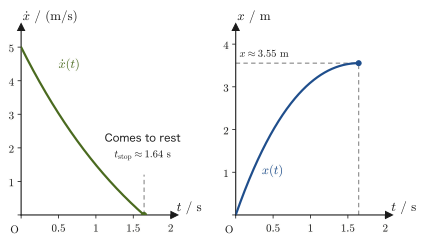

Chapter 43Lagrange's Equations of Motion — Generalized Coordinates and Generalized Forces
So far, we have described motion with the force $\bm F$ in the leading role. We substituted the forces that actually act (gravity, the restoring force of a spring, frictional force, normal force, tension, Coulomb force, ...) into Newton's equation of motion $m\ddot{\bm r}=\bm F$, set up differential equations component by component (in most cases in Cartesian coordinates $x,y,z$), and solved them—this has been our consistent method. However, this method has a practical difficulty. Consider a simple pendulum. The bob is pulled by the string and can move only on a circle of radius $\ell$. If we set up Newton's equation of motion in Cartesian coordinates $(x,y)$, a quantity called the “tension of the string” inevitably appears in the course of the calculation: its magnitude and direction keep changing during the motion, and it is moreover a quantity that we do not want to appear in the final answer (the time dependence of the bob's angle). And this is so even though the position of the bob is in fact completely determined by just one number, the angle $\theta$.
What we learn in Part VI, “Analytical Mechanics,” is a rewriting of Newtonian mechanics that avoids these difficulties. Its central ideas can be summarized in the following three.
- A form independent of coordinates: We do not necessarily have to use $x,y,z$ to describe motion. We are free to choose any set of numbers that specifies the position of the bob with nothing missing and nothing superfluous (an angle, an arc length, the distance between two bodies, ...), and regardless of how they are chosen, equations of motion of the same form hold (Lagrange's equations of motion, derived in this chapter). When the constraints are smooth (ideal), constraint forces (forces such as tension and the normal force that act only to maintain the constraints, and whose magnitudes are unknown) do not appear in the calculation from the outset (we check in Section 43.6 why they do not appear).
- Conservation laws and symmetry: Under this rewriting, the question “why are energy, momentum, and angular momentum conserved?” receives a unified and beautiful answer. It is a direct consequence of the fact that the laws of physics are symmetric (invariant) under translations in time and space and under rotations (Noether's theorem in Chapter 46). We come to see that the conservation laws you memorized one by one in high school physics actually follow from a single principle.
- The road to quantum mechanics and statistical mechanics: The Lagrangian $L$ of this chapter, the Hamiltonian $H$ of Chapter 45, and the Poisson bracket of Chapter 46 become, as they are, the foundation of the framework of quantum mechanics (the Schrödinger equation, commutation relations) and of statistical mechanics (the partition function, distributions on phase space). Analytical mechanics is both the culmination of mechanics up to the 19th century and the entrance to 20th-century physics. (In this book, statistical mechanics is treated in Part VII and the special theory of relativity in Part VIII. Quantum mechanics is the subject of a separate textbook.)
In this chapter, as a first step, we introduce the idea of “generalized coordinates,” which lets us avoid treating the constraints explicitly, and, starting from Newton's equation of motion, we derive the equations of motion written in generalized coordinates—Lagrange's equations of motion—without skipping a single line. In addition, throughout Part VI of this book, we define the Lagrangian as
$$ L \equiv T-U \qquad (T:\text{kinetic energy},\ U:\text{potential energy}) $$(Note that the order is $T$ minus $U$. The reason for this order is explained after Definition 43.6 in Section 43.4.)
- The meaning of the terms degrees of freedom, holonomic constraint, and generalized coordinates, and the reasons for using them
- The definition of the generalized momentum $p_i=\pdiff{T}{\dot q_i}=\pdiff{L}{\dot q_i}$ and its relation to the momentum in Cartesian coordinates
- The definition of the generalized force $Q_i=\sum_j F_j\pdiff{x_j}{q_i}$, and the fact that its units change depending on the choice of coordinates
- The procedure for deriving, from Newton's equation of motion alone, Lagrange's equations of motion $\diff{}{t}\!\left(\pdiff{L}{\dot q_i}\right)-\pdiff{L}{q_i}=0$ (for conservative forces) and $=Q_i'$ (when nonconservative forces are included)
- d'Alembert's principle and the principle of virtual work, another historical route to the same conclusion
- How to apply the derived equations to two concrete examples: one-dimensional linear motion (with friction and air resistance) and two-dimensional rotational motion (motion on a bowl-shaped surface)
Source notes: Yasuhide Mochizuki, Physics Notes: Analytical Mechanics, pp. 1–5.
43.1 Degrees of Freedom and Generalized Coordinates — Why Change Coordinates?
Review of notation: Symbols used in this chapter
- $\dot x$ (read “x dot”) is the time derivative $\dd x/\dd t$ of $x$ (the velocity), and $\ddot x$ (read “x double dot”) is $\dd^2x/\dd t^2$ (the acceleration). Similarly, the time derivative $\dot q_i=\dd q_i/\dd t$ (read “q i dot”) of a coordinate $q_i$ is called the generalized velocity.
- $\pdiff{f}{x}$ (read “partial $f$, partial $x$”) is the partial derivative: when $f$ is a function of several variables, it is the derivative with respect to $x$ alone, with the other variables held fixed (University Mathematics, Section 6.2).
- $\equiv$ is an equals sign meaning “define the left-hand side by the right-hand side.”
- $\displaystyle\sum_{j=1}^{n}a_j$ (read “sigma”) is shorthand for $a_1+a_2+\cdots+a_n$. The $j=1$ written below is the starting index, and the $n$ written above is the final index.
- “Conjugate to $q_i$” means that it forms a pair with $q_i$. For example, the generalized force $Q_i$ is, when the work can be written $\dd W=\sum_iQ_i\,\dd q_i$, the coefficient of $\dd q_i$, and the generalized momentum $p_i$ is the partner of $q_i$ for which $p_i\dot q_i$ has the dimension of energy (in the Hamiltonian formalism of Chapter 45, this “pairing” relationship takes center stage).
Let us consider a simple pendulum (Figure 43.1) as an example. Take the pivot as the origin, the $y$ axis vertically downward, and the $x$ axis horizontally rightward. The position of the bob can be specified by the two numbers $(x,y)$. However, since the bob is connected to the pivot by a string of length $\ell$, it must in fact always satisfy the relation
$$ x^2+y^2=\ell^2 $$This relation, a constraint, must hold at all times. In other words, the two numbers $(x,y)$ are not independent: once one of them is fixed, the other is almost determined by this equation (an ambiguity of sign remains, but if the bob stays on the same side, there is effectively only one independent piece of information). In fact, the position of the bob can be specified completely and without redundancy by just a single number, the angle $\theta$ measured from the vertical: $x=\ell\sin\theta,\ y=\ell\cos\theta$. If we use this $\theta$, the constraint $x^2+y^2=\ell^2$ is satisfied automatically, and we no longer need to worry about it.
We call this “number of effectively independent pieces of information” the number of degrees of freedom (DOF), and we call a set of that many variables, chosen so that they specify the position completely and without redundancy, generalized coordinates. A simple pendulum has one degree of freedom, and $\theta$ is one example of a generalized coordinate for it (we could use the arc length $s=\ell\theta$ instead of $\theta$; the choice of generalized coordinates is not unique).
Definition 43.1: Degrees of freedom
The positions of a system of $N$ particles (point masses) can in general be specified by $3N$ Cartesian coordinates ($x,y,z$ for each particle). When there are $k$ independent relations (constraints) among these coordinates that hold at all times during the motion, the number of coordinates that can be varied independently
$$ f=3N-k $$is called the degrees of freedom (DOF) of the system. The number of degrees of freedom $f$ is the number of variables needed to specify the configuration of the system completely and without redundancy. (From the next section on, we write the number $3N$ of Cartesian coordinates as $n$. If there are no constraints, the number of degrees of freedom $f$ and the number of Cartesian coordinates $n$ coincide.)
Definition 43.2: Holonomic constraint
When a constraint can be written in the form of a relation among the coordinates and the time $t$ only
$$ h_a(x_1,x_2,\ldots,x_{3N},t)=0\qquad(a=1,2,\ldots,k) $$(that is, it does not essentially involve the velocities $\dot x_j$), the constraint is called holonomic (integrable). (To avoid confusion with the degrees of freedom $f=3N-k$, whose symbol is $f$, we write the functions expressing the constraints as $h_a$.) The constraint $x^2+y^2-\ell^2=0$ of the simple pendulum, and all the constraints treated in this chapter, are holonomic. A constraint that does not contain the time $t$ explicitly ($h_a(x_1,\ldots,x_{3N})=0$) is sometimes called scleronomic (the constraint is fixed in time), and one that contains $t$ explicitly rheonomic (the constraint itself moves).
Caution: Nonholonomic constraints also exist
A constraint that unavoidably contains velocities and cannot be integrated into a relation among the coordinates alone is called nonholonomic (for example, a disk (coin) rolling without slipping on a horizontal plane. When the position and orientation of the disk can be changed freely, the condition “the velocity of the contact point is 0” involves velocities and cannot be integrated into a relation among the coordinates alone. In contrast, a disk rolling only along a straight line can be described by a relation among the coordinates and is therefore holonomic). A nonholonomic system cannot use Lagrange's equations of motion, which we are about to derive, in their present form, and requires special treatment. All the constraints treated in this book are holonomic.
Definition 43.3: Generalized coordinates
For a system with $f$ degrees of freedom, $f$ independent variables $q_1,q_2,\ldots,q_f$ that can specify the configuration completely and without redundancy are called generalized coordinates. Generalized coordinates need not have the dimension of length: an angle ($\theta$ of the simple pendulum), an area, a ratio, or anything else that can specify the configuration will do. The choice of generalized coordinates is not unique, but once they have been chosen, the Cartesian coordinates $x_1,\ldots,x_{3N}$ can be expressed as functions of the generalized coordinates as
$$ x_j=x_j(q_1,q_2,\ldots,q_f,t)\qquad(j=1,2,\ldots,3N) $$If the constraints are scleronomic (do not contain $t$ explicitly), the Cartesian coordinates can be taken in the form $x_j=x_j(q_1,\ldots,q_f)$, which does not contain $t$ explicitly.
Intuition: What do we gain by using generalized coordinates?
If we set up Newton's equation of motion in the Cartesian coordinates $(x,y)$ as they are, we must write into both the $x$-direction and the $y$-direction equations an unknown force, the “tension of the string” that holds the bob on the circle, whose magnitude changes from moment to moment during the motion. And yet what we ultimately want to know is not the value of the tension but only how the bob swings ($\theta(t)$). By contrast, if we use from the start the generalized coordinate $\theta$, which satisfies the constraint, the tension (a force that acts only to maintain the constraint) does not appear anywhere in the calculation (the reason it does not appear is that the tension is always perpendicular to the motion of the bob when $\theta$ is changed—the tangent direction of the circle—and so does no work. We verify this in Section 43.6). The greatest advantage of using generalized coordinates lies precisely in this point: we need not take the troublesome constraint force into account. Lagrange's equations of motion, which we derive in this chapter, are a framework that guarantees this advantage for any choice of generalized coordinates.
Example 43.1: Degrees of freedom of an object sliding on an incline
There is a smooth incline tilted at an angle $\alpha$ to the horizontal plane. Take the $x$ axis (horizontally rightward) and the $y$ axis (vertically upward) in the vertical plane, with the lowest point of the incline as the origin. An object of mass $m$ moves without leaving the incline (only along the incline). (1) How many degrees of freedom does this system have? (2) Letting $s$ be the distance from the origin measured along the incline, express the Cartesian coordinates $(x,y)$ as functions of $s$.
Solution. (1) Since the object moves in a vertical plane, there are two Cartesian coordinates $(x,y)$. The condition “does not leave the incline” means that the object lies on the line $y=x\tan\alpha$, which is a case with one holonomic constraint that does not contain the time $t$ explicitly. Therefore the number of degrees of freedom is
$$ f=2-1=1 $$(2) Since there is one degree of freedom, one generalized coordinate suffices. If we choose the distance $s$ along the incline as the generalized coordinate, then, since the inclination angle of the incline is $\alpha$, we can write
$$ x=s\cos\alpha,\qquad y=s\sin\alpha $$Substituting these into the constraint $y=x\tan\alpha$ gives $s\sin\alpha=(s\cos\alpha)\tan\alpha=s\sin\alpha$, which holds identically regardless of the value of $s$—that is, as soon as we express things using $s$, we no longer need to worry about the constraint. This is the meaning of choosing generalized coordinates.
Example 43.2: Degrees of freedom of two particles connected by a rod
Two particles of masses $m_1,\,m_2$ are connected by a light rod of length $d$ that does not bend, and move freely in three-dimensional space (a rigid-body model of a diatomic molecule). (1) How many degrees of freedom $f$ does the system have? (2) Give one choice of generalized coordinates, and express the Cartesian coordinates of the two particles in terms of them.
Solution. (1) Since there are $N=2$ particles, there are $3N=6$ Cartesian coordinates ($x,y,z$ of each particle). Because of the rod, the distance between the two particles is always $d$, and with $\bm r_1,\bm r_2$ the position vectors of particles 1 and 2, the relation
$$ \abs{\bm r_2-\bm r_1}^2-d^2=0 $$holds at all times during the motion. This is a relation among the coordinates only, containing neither the time $t$ nor velocities, so this is a case with $k=1$ holonomic constraint (Definition 43.2). Hence the number of degrees of freedom is
$$ f=3N-k=6-1=5 $$(2) Let $M=m_1+m_2$ be the total mass. As generalized coordinates we choose the position of the center of mass $\bm R=(X,Y,Z)$ (three coordinates) and the two angles of the unit vector pointing from particle 1 to particle 2
$$ \bm n=(\sin\theta\cos\varphi,\ \sin\theta\sin\varphi,\ \cos\theta) $$namely $\theta,\varphi$ (two coordinates, with the same meaning as the angles of spherical coordinates; Figure 43.3). That makes five in all, in agreement with $f=5$. Then we can write
$$ \bm r_1=\bm R-\frac{m_2}{M}\,d\,\bm n,\qquad \bm r_2=\bm R+\frac{m_1}{M}\,d\,\bm n $$Let us verify this. First, $\bm r_2-\bm r_1=\left(\dfrac{m_1}{M}+\dfrac{m_2}{M}\right)d\,\bm n=d\,\bm n$, and since $\abs{\bm n}=1$, $\abs{\bm r_2-\bm r_1}=d$ holds identically (whatever the values of $\theta,\varphi$ and $\bm R$). That is, the constraint is satisfied automatically as soon as we use the generalized coordinates, and we no longer need to worry about it. Also, the center of mass is $\dfrac{m_1\bm r_1+m_2\bm r_2}{M}=\bm R+\dfrac{-m_1m_2+m_2m_1}{M^2}\,d\,\bm n=\bm R$, so $\bm R$ is indeed the center of mass. The five degrees of freedom break down into three translational and two rotational ones (the orientation of the rod).
(In the kinetic theory of gases, the kinetic energy of a diatomic molecule is considered to be distributed among these three translational and two rotational degrees of freedom, $\tfrac12k_{\mathrm B}T$ to each. The “five degrees of freedom” in Section 24.3 is the number of degrees of freedom counted here. The “vibrational” degree of freedom that changes the length of the rod has disappeared in the rigid-body model because of the constraint.)
Application: Generalized coordinates and constraints are used routinely in materials science too
In calculations for molecules and crystals, it is often easier to see the physics if, instead of using the $3N$ Cartesian coordinates of the individual atoms as they are, we choose internal coordinates such as bond lengths, bond angles, and dihedral angles as generalized coordinates. For example, if from a water molecule ($N=3$, nine Cartesian coordinates) we remove the three translational and three rotational degrees of freedom of the molecule as a whole, the internal degrees of freedom number $9-6=3$ (the two O–H bond lengths and the H–O–H bond angle). In molecular dynamics simulations, constraint algorithms such as the SHAKE method are used to fix the length of the particularly fast-vibrating O–H bonds (that is, to impose holonomic constraints) so that a larger time step can be taken. Also, in the lattice vibrations of a crystal, if we rewrite the displacement of each atom as a superposition of mutually independent harmonic oscillations (normal modes), the amplitude of each normal mode (the normal coordinate) acts as a generalized coordinate, and the total energy splits into a sum over the normal coordinates. Both are examples of the idea of this chapter that “coordinates need not be $x,y,z$.”
As with the simple pendulum and the object on the incline, the basic approach is to “choose the generalized coordinates in advance so that they satisfy the constraints, and express the Cartesian coordinates as functions of them.” In the next section, Section 43.2, we extend this idea to more general systems (of $N$ particles) and begin by rewriting the kinetic energy in terms of the generalized coordinates, starting from the correspondence $x_j=x_j(q_1,\ldots,q_f)$ between the Cartesian and the generalized coordinates. In addition, in the example of Section 43.7.2 we will also see another way of using generalized coordinates: deliberately not reducing the coordinates to exactly the number of degrees of freedom, and keeping the constraint force (the normal force) in the calculation on purpose.
From the next section on, we derive Lagrange's equations of motion starting from Newton's equation of motion alone. We summarize the overall route in Figure 43.2. If you get lost along the way, return to this figure and check “which stage are we at now?”
43.2 Generalized Momentum
Example first: In polar coordinates, momentum turns into angular momentum
Before entering the general formulas, let us look at what the quantity we are about to construct really is, in the simplest case: a single particle of mass $m$ moving in the $xy$ plane. In Cartesian coordinates $(x,y)$ the kinetic energy is $T=\tfrac12m(\dot x^2+\dot y^2)$, and taking its partial derivatives with respect to the velocities gives $\partial T/\partial\dot x=m\dot x$ and $\partial T/\partial\dot y=m\dot y$, that is, the familiar momentum $mv$. In plane polar coordinates $(r,\theta)$, however, we have $T=\tfrac12m(\dot r^2+r^2\dot\theta^2)$ (to be verified in Example 43.3), and while $\partial T/\partial\dot r=m\dot r$ is the momentum in the radial direction, $\partial T/\partial\dot\theta=mr^2\dot\theta$ does not have the form mass × velocity; it is the angular momentum. The same operation, “taking the partial derivative of the kinetic energy with respect to the velocity,” yields a momentum or an angular momentum depending on how the coordinates are chosen. The quantity obtained by defining this operation in a form that works for any coordinates is the generalized momentum, which we introduce below. In the general discussion that follows, we will from time to time relate it to this example with remarks such as “in polar coordinates, …”.
For the simple pendulum there was only one degree of freedom, so things were simple, but in general we consider a system consisting of $N$ particles. The position of each particle is determined by three numbers, the Cartesian coordinates $(x,y,z)$, so altogether $3N$ numbers are needed. Below, we line these up in a row and name them $\alpha_1,\alpha_2,\ldots,\alpha_{3N}$ (the $x,y,z$ coordinates of particle 1 are $\alpha_1,\alpha_2,\alpha_3$, the $x,y,z$ coordinates of particle 2 are $\alpha_4,\alpha_5,\alpha_6$, and so on). A mass $m_j$ is associated with each $\alpha_j$ (all of $\alpha_1,\alpha_2,\alpha_3$, which belong to particle 1, are associated with the mass of particle 1, and so on). Then the kinetic energy of the whole system is the sum, over all the particles, of the kinetic energy $\tfrac12 m\,(\dot x^2+\dot y^2+\dot z^2)$ of each particle, and can be written as
\begin{equation} T=\frac12\sum_{j=1}^{3N}m_j\dot\alpha_j^{\,2} \label{eq:43-T-cartesian} \end{equation}Hereafter we set $n\equiv 3N$ ($n$ is simply the number of Cartesian coordinates; note that it is not necessarily equal to the number of degrees of freedom $f=3N-k$ (Section 43.1). If there are no constraints, then $k=0$, so $f=3N=n$ and the two coincide). If we rewrite the range of the index, Eq. \eqref{eq:43-T-cartesian} can also be written as
$$ T(\alpha_1,\alpha_2,\ldots,\alpha_n)=\frac12\sum_{j=1}^{n}m_j\dot\alpha_j^{\,2} $$with the arguments of the kinetic energy written out explicitly.
Now we introduce the generalized coordinates $q_1,q_2,\ldots,q_n$ (Section 43.1) and express the Cartesian coordinates $\alpha_j$ as functions of the generalized coordinates:
$$ \begin{cases} \alpha_1=\alpha_1(q_1,q_2,\ldots,q_n)\\ \alpha_2=\alpha_2(q_1,q_2,\ldots,q_n)\\ \quad\vdots\\ \alpha_n=\alpha_n(q_1,q_2,\ldots,q_n) \end{cases} \qquad\text{that is}\qquad \alpha_j(\{q_i\})\quad(j=1,2,\ldots,n) $$Here $\{q_i\}$ is shorthand for $q_1,\ldots,q_n$ taken together. Below we consider the case in which the number of generalized coordinates is the same $n$ as the number of Cartesian coordinates (the case with no constraints, in which we only change coordinates). Even when there are constraints and the number $f$ of generalized coordinates is smaller than $n$, the derivation below holds as it stands if we merely reread the range of the sums over $q_i$ (indices $i,k$) as running from $1$ to $f$ (the sums over the Cartesian coordinates, with index $j$, still run from $1$ to $n$). In that case, however, there is a condition on what may be put into the force $F_j$ (see the following Caution). Note also that in the example of Section 43.7.2, we deliberately keep in the calculation more coordinates ($r$ and $\theta$) than there are degrees of freedom.
Caution: The condition under which constraint forces drop out of the equations when $f\lt n$
In Newton's equation of motion $m_j\ddot x_j=F_j$, $F_j$ is, strictly speaking, the component of all the forces acting on the particle—the active forces such as gravity or a spring force, plus the constraint forces $R_j$ such as the tension of a string or a normal force. Therefore the generalized force $\sum_jF_j\,\partial x_j/\partial q_i$ that we are about to introduce should also contain the contribution $\sum_jR_j\,\partial x_j/\partial q_i$ of the constraint forces. This contribution vanishes, so that the equations of motion can be set up without knowing the constraint forces, when the constraint forces do no work for the motions allowed by the generalized coordinates (displacements in the direction of $\partial x_j/\partial q_i$), that is, in the case of an ideal constraint (a smooth surface, an inextensible string, and so on). We define this in Section 43.6 and verify it for the tension of a simple pendulum in Example 43.8. Until then, please read on with the premise that “under ideal constraints, only the active forces need to be put into $F_j$.” When there is friction on a contact surface, the frictional force does work, so it is put on the side of the active forces (as a nonconservative force, Section 43.5).
Illustration 43.1: Conversion to spherical coordinates
Consider describing the position of a single particle ($N=1$, hence $n=3N=3$) not by the Cartesian coordinates $\alpha_1=x,\ \alpha_2=y,\ \alpha_3=z$ but by the spherical coordinates (University Mathematics, Section 16.3) $q_1=r,\ q_2=\theta,\ q_3=\varphi$. Here $r$ is the distance from the origin, $\theta$ is the angle measured from the $z$ axis (the polar angle), and $\varphi$ is the angle measured from the $x$ axis in the $xy$ plane (the azimuthal angle) (Figure 43.3). We then have
$$ \begin{cases} x=r\sin\theta\cos\varphi\\ y=r\sin\theta\sin\varphi\\ z=r\cos\theta \end{cases} $$and therefore the coordinates can be written as $\alpha_j(r,\theta,\varphi)$ ($j=1,2,3$).
The coordinates $\{\alpha_i\}$ and $\{q_i\}$ ($i=1,2,\ldots,n$) are all functions of the time $t$ as the motion proceeds. Let us now sort out some terminology. When we write $\alpha_j$ as a function of the $q_i$, $\alpha_j(\{q_i\})$, the expression itself does not contain $t$ ($t$ enters only indirectly, through $q_i(t)$). In such a case we say that “$\alpha_j$ contains $t$ implicitly.” In contrast, when the transformation itself changes with time (for example, when the coordinate system is rotating or translating with time), $t$ appears directly in the expression, as in $\alpha_j(\{q_i\},t)$, and we say that it “contains $t$ explicitly.” All the transformations treated in this chapter contain $t$ only implicitly (scleronomic, Definition 43.2).
Under these transformations, by differentiation of a composite function (the chain rule, University Mathematics, Section 6.4), the time derivative $\dot\alpha_j$ of $\alpha_j$ is given, when $t$ is contained only implicitly, by
$$ \dot\alpha_j=\sum_{k=1}^{n}\pdiff{\alpha_j}{q_k}\dot q_k $$When it is also contained explicitly, $\partial\alpha_j/\partial t$ is added to this, giving
$$ \dot\alpha_j=\sum_{k=1}^{n}\pdiff{\alpha_j}{q_k}\dot q_k+\pdiff{\alpha_j}{t} $$(The first of these equations is derived anew within this section.) In either case, $\dot\alpha_j$ is a function of both $q_i$ and $\dot q_i$ (and, when it is contained explicitly, it depends on $t$ as well).
Now, the kinetic energy $T$ was written in Eq. \eqref{eq:43-T-cartesian} as a function of the $\dot\alpha_j$, but since $\dot\alpha_j=\dot\alpha_j(\{q_i\},\{\dot q_i\})$, we see that $T$ is, after all, a function of $\{q_i\}$ and $\{\dot q_i\}$. Therefore we can take the partial derivative of $T$ with respect to $\dot q_i$ (holding the other variables fixed).
Definition 43.4: Generalized momentum
\begin{equation} p_i\equiv\pdiff{T}{\dot q_i} \label{eq:43-genmom-def} \end{equation}This quantity is defined as the generalized momentum conjugate to the generalized coordinate $q_i$ (that is, paired with $q_i$). If we simply choose the Cartesian coordinates as the generalized coordinates ($q_i=\alpha_i$), then $p_i=\partial T/\partial\dot\alpha_i=m_i\dot\alpha_i$, which agrees with the familiar momentum $mv$. For general generalized coordinates, however, $p_i$ does not necessarily have the form mass × velocity, and its unit is not necessarily $\mathrm{kg\,m/s}$ (see Example 43.3 and the Caution in the next section).
Let us rewrite this $p_i$ in terms of masses and velocities in Cartesian coordinates. Since $T$ is a function of $\dot\alpha_1,\ldots,\dot\alpha_n$ (Eq. \eqref{eq:43-T-cartesian}), the total differential of $T$ (University Mathematics, Section 6.3) is given by
$$ \dd T=\pdiff{T}{\dot\alpha_1}\dd\dot\alpha_1+\pdiff{T}{\dot\alpha_2}\dd\dot\alpha_2+\cdots+\pdiff{T}{\dot\alpha_n}\dd\dot\alpha_n $$This equation is precisely the general formula for the total differential of a function of several variables: “the change in $T$ is the sum, over all the variables, of the product of the sensitivity (partial derivative) to the change of each of the $n$ variables $\dot\alpha_1,\ldots,\dot\alpha_n$ and the actual amount of change.”
Now, when we take the partial derivative of $T$ with respect to $\dot q_i$ (holding the other variables fixed), $T$ does not depend on $\dot q_i$ directly; it depends on it indirectly, through $\dot\alpha_1,\ldots,\dot\alpha_n$. So we use the chain rule (partial differentiation of a composite function, University Mathematics, Section 6.4).
Derivation: Rewriting the generalized momentum in Cartesian coordinates
The partial derivative of $T$ with respect to $\dot q_i$ is the sum of the contributions passing through each $\dot\alpha_j$, and we obtain
\begin{equation} \pdiff{T}{\dot q_i}=\underbrace{\pdiff{T}{\dot\alpha_1}}_{m_1\dot\alpha_1}\cdot\pdiff{\dot\alpha_1}{\dot q_i}+\underbrace{\pdiff{T}{\dot\alpha_2}}_{m_2\dot\alpha_2}\cdot\pdiff{\dot\alpha_2}{\dot q_i}+\cdots+\underbrace{\pdiff{T}{\dot\alpha_n}}_{m_n\dot\alpha_n}\cdot\pdiff{\dot\alpha_n}{\dot q_i}=\sum_{j=1}^{n}m_j\dot\alpha_j\pdiff{\dot\alpha_j}{\dot q_i} \label{eq:43-p-step1} \end{equation}(We call Eq. \eqref{eq:43-p-step1} ①. In each term, the underbraced part uses the fact that partially differentiating Eq. \eqref{eq:43-T-cartesian} with respect to $\dot\alpha_j$ gives $\partial T/\partial\dot\alpha_j=m_j\dot\alpha_j$—in $T=\tfrac12\sum m_l\dot\alpha_l^2$, the only term containing $\dot\alpha_j$ is $\tfrac12 m_j\dot\alpha_j^2$, and differentiating this with respect to $\dot\alpha_j$ gives $m_j\dot\alpha_j$.)
Remembering it by picture: Why $\pdiff{\dot\alpha_j}{\dot q_i}=\pdiff{\alpha_j}{q_i}$ holds
Let us first look intuitively at what $\partial\dot\alpha_j/\partial\dot q_i$, which appeared in Eq. \eqref{eq:43-p-step1}, turns out to be. Since $\dot\alpha_j=\dd\alpha_j/\dd t$ and $\dot q_i=\dd q_i/\dd t$, if we regard it formally as “a ratio of quantities each divided by $\dd t$,” then
$$ \pdiff{\dot\alpha_j}{\dot q_i}=\frac{\dd\alpha_j/\dd t}{\dd q_i/\dd t}=\pdiff{\alpha_j}{q_i} $$can be expected to hold (the picture is that the $\dd t$ in the numerator and the denominator behave as if they could be cancelled). This is only a way of remembering it and not a rigorous proof, but, as we actually show below, this intuition is correct.
Let us check this intuition properly. Since $\alpha_j$ is a function of the generalized coordinates $q_1,\ldots,q_n$, its total differential is given by
$$ \dd\alpha_j=\pdiff{\alpha_j}{q_1}\dd q_1+\pdiff{\alpha_j}{q_2}\dd q_2+\cdots+\pdiff{\alpha_j}{q_n}\dd q_n $$Dividing both sides (formally) by the infinitesimal change $\dd t$ of time, we obtain
\begin{equation} \dot\alpha_j=\pdiff{\alpha_j}{q_1}\dot q_1+\pdiff{\alpha_j}{q_2}\dot q_2+\cdots+\pdiff{\alpha_j}{q_n}\dot q_n=\sum_{k=1}^{n}\pdiff{\alpha_j}{q_k}\dot q_k \label{eq:43-alphadot} \end{equation}(Note that $\partial\alpha_j/\partial q_k$ is a function of $q_1,\ldots,q_n$ only and does not contain $\dot q_k$.) We now take the partial derivative of Eq. \eqref{eq:43-alphadot} with respect to $\dot q_i$. Of the terms in the sum on the right-hand side, only the term with $k=i$ explicitly contains $\dot q_i$, and the other terms ($k\neq i$) contain $\dot q_k$ ($k\neq i$). Since the generalized coordinates $q_1,\ldots,q_n$ are mutually independent variables, their time derivatives $\dot q_1,\ldots,\dot q_n$ are also mutually independent variables, and a partial derivative with respect to a different index gives 0: $\partial\dot q_k/\partial\dot q_i=0\ (k\neq i)$, $\partial\dot q_i/\partial\dot q_i=1$. This convention of “treating them as independent variables” is a place where one easily stumbles in mechanics, so let us read the following explanation.
Why: May we take partial derivatives with respect to $q_i$ and $\dot q_i$ as independent variables?
The position $q$ and the velocity $\dot q$ at a given instant can be chosen freely and separately as initial conditions (we can throw an object from the same position with different speeds). So, as in $T=T(q,\dot q)$, we treat $q$ and $\dot q$ as “two independent variables.” The operator $\partial/\partial\dot q_i$ means the rate of change when we hold $q_1,\ldots,q_n$ and all the other velocities fixed and move only $\dot q_i$ slightly. Hence $\partial\dot q_k/\partial\dot q_i$ equals 1 if $k=i$ and 0 if $k\neq i$. The time derivative $\dd/\dd t$, on the other hand, is a separate operation: it is carried out after the partial derivatives have been taken, by turning $q_i(t),\dot q_i(t)$ back into functions of time. For example, if $T=\tfrac12m\dot q^2$, then $\partial T/\partial\dot q=m\dot q$ and $\partial T/\partial q=0$, and taking $\dd/\dd t$ afterwards gives $\dd(m\dot q)/\dd t=m\ddot q$.
Under this convention, we have
\begin{equation} \pdiff{\dot\alpha_j}{\dot q_i}=\pdiff{\alpha_j}{q_1}\underbrace{\pdiff{\dot q_1}{\dot q_i}}_{0}+\pdiff{\alpha_j}{q_2}\underbrace{\pdiff{\dot q_2}{\dot q_i}}_{0}+\cdots+\pdiff{\alpha_j}{q_i}\underbrace{\pdiff{\dot q_i}{\dot q_i}}_{1}+\cdots+\pdiff{\alpha_j}{q_n}\underbrace{\pdiff{\dot q_n}{\dot q_i}}_{0}=\pdiff{\alpha_j}{q_i} \label{eq:43-p-step2} \end{equation}(we call Eq. \eqref{eq:43-p-step2} ②; this confirms that the intuition from the earlier “Remembering it by picture” box was in fact correct). Substituting ② into ① (Eq. \eqref{eq:43-p-step1}) gives
\begin{equation} p_i=\pdiff{T}{\dot q_i}=\sum_{j=1}^{n}m_j\dot\alpha_j\pdiff{\alpha_j}{q_i} \label{eq:43-genmom-final} \end{equation}as the result.
∎
Advanced Topic: When the coordinate transformation contains the time $t$ explicitly
If the transformation equations contain $t$ explicitly, as in $\alpha_j=\alpha_j(\{q_i\},t)$, then by the chain rule (University Mathematics, Section 6.4), one more term, the partial derivative with respect to $t$, is added to the right-hand side of Eq. \eqref{eq:43-alphadot}:
$$ \dot\alpha_j=\sum_{k=1}^{n}\pdiff{\alpha_j}{q_k}\dot q_k+\pdiff{\alpha_j}{t} $$This additional term $\partial\alpha_j/\partial t$ does not contain $\dot q_i$, so it vanishes when we differentiate partially with respect to $\dot q_i$, and the result $\partial\dot\alpha_j/\partial\dot q_i=\partial\alpha_j/\partial q_i$ of Eq. \eqref{eq:43-p-step2} continues to hold unchanged. For example, if we choose as generalized coordinates the coordinates $(\xi,\eta)$ of a coordinate system rotating in the $xy$ plane with constant angular velocity $\omega$, then $t$ appears explicitly, as in $x=\xi\cos\omega t-\eta\sin\omega t,\ y=\xi\sin\omega t+\eta\cos\omega t$. In the rest of this chapter we restrict the discussion to the case in which $t$ is not contained explicitly (is contained only implicitly).
Eq. \eqref{eq:43-genmom-final} is the expression that rewrites the generalized momentum in terms of the masses and velocities in Cartesian coordinates. In the next section, Section 43.3, we introduce the generalized force by differentiating this expression with respect to time $t$.
Example 43.3: Generalized momenta in plane polar coordinates
Suppose a particle of mass $m$ moves in the $xy$ plane. If, instead of the Cartesian coordinates $(x,y)$, we choose the plane polar coordinates (Section 6.1) $q_1=r,\ q_2=\theta$ ($x=r\cos\theta,\ y=r\sin\theta$) as the generalized coordinates, find the generalized momenta $p_r,p_\theta$.
Solution. By the result of Section 6.1 (or by differentiating $x=r\cos\theta,y=r\sin\theta$ directly with respect to time and simplifying), the velocity in plane polar coordinates decomposes into a component $\dot r$ in the radial direction and a component $r\dot\theta$ in the direction perpendicular to it, and the square of the speed is $\dot x^2+\dot y^2=\dot r^2+r^2\dot\theta^2$. The kinetic energy is therefore
$$ T=\frac12m(\dot r^2+r^2\dot\theta^2) $$Differentiating partially with respect to $\dot r,\dot\theta$, respectively, according to Definition 43.4 (Eq. \eqref{eq:43-genmom-def}), we obtain
$$ p_r=\pdiff{T}{\dot r}=m\dot r,\qquad p_\theta=\pdiff{T}{\dot\theta}=mr^2\dot\theta $$The quantity $p_r=m\dot r$ is the familiar “radial momentum” (unit $\mathrm{kg\,m/s}$), but $p_\theta=mr^2\dot\theta$ does not have the form mass × velocity, and its unit is $\mathrm{kg\,m^2/s}$. In fact it is exactly the angular momentum (the $z$ component $L_z=mr^2\dot\theta$ that we learned about in Section 2.5; since we use $L$ for the Lagrangian in this chapter, we write the angular momentum as $L_z$). When an angle is chosen as the generalized coordinate, the generalized momentum conjugate to it is an angular momentum—we will also take this up in the Caution in the next section.
43.3 Generalized Force
Let us differentiate with respect to time $t$ the expression for the generalized momentum obtained in the previous section, Eq. \eqref{eq:43-genmom-final}, $p_i=\sum_j m_j\dot x_j\,\partial x_j/\partial q_i$ (from here on we write the Cartesian coordinates as $x_j$ instead of $\alpha_j$; they mean the same thing: the $3N$ Cartesian coordinates of $N$ particles). To do so, we first make a small preparation.
Math Tool: The fact that $\diff{}{t}\!\left(\pdiff{x_j}{q_i}\right)=\pdiff{\dot x_j}{q_i}$ holds
Since $\partial x_j/\partial q_i$ is the partial derivative of $x_j=x_j(q_1,\ldots,q_n)$ with respect to $q_i$, it is a function of $q_1,\ldots,q_n$ only. To differentiate it with respect to time $t$, we use the chain rule (University Mathematics, Section 6.4) as follows:
$$ \diff{}{t}\!\left(\pdiff{x_j}{q_i}\right)=\sum_{k=1}^n\pdiff{}{q_k}\!\left(\pdiff{x_j}{q_i}\right)\dot q_k=\sum_{k=1}^n\frac{\partial^2x_j}{\partial q_i\partial q_k}\dot q_k $$On the other hand, by Eq. \eqref{eq:43-alphadot} we had $\dot x_j=\sum_k(\partial x_j/\partial q_k)\dot q_k$, so differentiating this partially with respect to $q_i$ (since $\dot q_k$ does not contain $q_i$, only the factor $\partial x_j/\partial q_k$ needs to be differentiated) gives
$$ \pdiff{\dot x_j}{q_i}=\sum_{k=1}^n\pdiff{}{q_i}\!\left(\pdiff{x_j}{q_k}\right)\dot q_k=\sum_{k=1}^n\frac{\partial^2x_j}{\partial q_k\partial q_i}\dot q_k $$Interchanging the order of partial differentiation does not change the result (Schwarz's theorem, University Mathematics, Section 6.3), so the right-hand sides of the two expressions are equal. Therefore,
\begin{equation} \diff{}{t}\!\left(\pdiff{x_j}{q_i}\right)=\pdiff{\dot x_j}{q_i} \label{eq:43-commute} \end{equation}holds. This says that the “time derivative” and the “partial derivative with respect to $q_i$” may be interchanged.
Derivation: Introducing the generalized force
We differentiate the generalized momentum $p_i=\sum_j m_j\dot x_j\,\partial x_j/\partial q_i$ with respect to $t$ using the product rule (each term of the sum is a product of two functions of $t$, namely $m_j\dot x_j$ and $\partial x_j/\partial q_i$):
$$ \dot p_i=\sum_{j=1}^{n}\left(m_j\ddot x_j\pdiff{x_j}{q_i}+m_j\dot x_j\diff{}{t}\!\left(\pdiff{x_j}{q_i}\right)\right) $$Now we use Eq. \eqref{eq:43-commute} to rewrite $\dd/\dd t(\partial x_j/\partial q_i)$ in the second term on the right as $\partial\dot x_j/\partial q_i$, which gives
$$ \dot p_i=\sum_{j=1}^{n}\left(m_j\ddot x_j\pdiff{x_j}{q_i}+m_j\dot x_j\pdiff{\dot x_j}{q_i}\right) $$The first term on the right, $m_j\ddot x_j$, is precisely Newton's equation of motion (Section 2.2) in the direction of the $j$th Cartesian coordinate; if $F_j$ denotes the force acting in that direction, then $m_j\ddot x_j=F_j$. The second term on the right is exactly equal to the partial derivative of the kinetic energy $T=\tfrac12\sum_j m_j\dot x_j^2$ with respect to $q_i$ (taken, by the chain rule, by way of $\dot x_j$):
$$ \pdiff{T}{q_i}=\sum_{j=1}^n\pdiff{T}{\dot x_j}\pdiff{\dot x_j}{q_i}=\sum_{j=1}^n m_j\dot x_j\pdiff{\dot x_j}{q_i} $$(We used $\partial T/\partial\dot x_j=m_j\dot x_j$. This is the same calculation as the one by which we derived $p_i$ in Section 43.2.) Putting the above together, we obtain
\begin{equation} \dot p_i=\underbrace{\sum_{j=1}^n F_j\pdiff{x_j}{q_i}}_{\text{generalized force}}+\pdiff{T}{q_i} \label{eq:43-pdot-result} \end{equation}as the result.
∎
We now give a name to the underlined part of Eq. \eqref{eq:43-pdot-result} and define it formally.
Definition 43.5: Generalized force
\begin{equation} Q_i\equiv\sum_{j=1}^{n}F_j\pdiff{x_j}{q_i} \label{eq:43-genforce-def} \end{equation}We define this to be the generalized force conjugate to the generalized coordinate $q_i$. Here $F_j$ is the force acting on the particles (all the forces, including the internal forces, which are the forces acting between the particles), resolved into components along each Cartesian direction. However, when we use generalized coordinates with $f\lt n$ that incorporate the constraints, ideal constraint forces do not contribute to $Q_i$ (Section 43.6), so only the active forces need to be included in $F_j$.
Let us check from the viewpoint of work that this definition is natural. The infinitesimal work done on the system of particles as a whole by the forces $F_j$ acting on the particles ($j=1,\ldots,n$, components in Cartesian coordinates) can be written, in Cartesian coordinates, as
\begin{equation} \dd W=\sum_{j=1}^{N}\bm F_j\cdot\dd\bm x_j=\sum_{j=1}^{n}F_j\,\dd x_j \label{eq:43-dW-cartesian} \end{equation}(we call Eq. \eqref{eq:43-dW-cartesian} Ⓐ; note that this is a statement in Cartesian coordinates).
Caution: The units of the generalized force and the generalized momentum are not always $\mathrm N$ and $\mathrm{kg\cdot m/s}$!!
Looking at Eq. \eqref{eq:43-genforce-def}, we see that $Q_i$ is $F_j$ (unit $\mathrm N$) multiplied by $\partial x_j/\partial q_i$ (which depends on the unit of $q_i$), so the unit of $Q_i$ changes with the unit of $q_i$. For example, if we choose $q_1=r$ (a length) and $q_2=\theta$ (an angle, dimensionless) as the generalized coordinates, then $p_\theta$ becomes an angular momentum, as we saw in Example 43.3 (its unit is $\mathrm{kg\,m^2/s}$, which differs from the unit of momentum, $\mathrm{kg\,m/s}$; $p_r$, on the other hand, remains the ordinary momentum). Similarly, $Q_\theta$ becomes a torque (moment of force; unit $\mathrm{N\,m}$). Be careful not to be misled by the names “generalized force” and “generalized momentum” into assuming that the units are also the same as those of force and momentum (the dimensions seen when taking partial derivatives of the Lagrangian, and the correspondence for each type of $q_i$, are summarized in Table 44.1).
We should be able to define this infinitesimal work $\dd W$ using the generalized coordinates $q_i$ as well. So let us take the work to be
\begin{equation} \dd W\equiv\sum_{i=1}^{n}Q_i\,\dd q_i \label{eq:43-dW-generalized} \end{equation}and define $Q_i$ anew in this equation as the generalized force—let us confirm that this definition does not contradict Eq. \eqref{eq:43-genforce-def}. Substituting the total differential $\dd x_j=\sum_i(\partial x_j/\partial q_i)\dd q_i$ into Ⓐ gives
Derivation: Checking that the two definitions agree
$$ \dd W=\sum_{j=1}^{n}F_j\left(\underbrace{\sum_{i=1}^{n}\pdiff{x_j}{q_i}\dd q_i}_{\dd x_j}\right) $$Here the right-hand side has a sum over $i$ nested inside a sum over $j$. Interchanging the order of summation (the answer is the same whichever sum is carried out first—a property of finite sums) and bringing the sum over $i$ to the outside, we get
$$ \dd W=\sum_{i=1}^{n}\left(\underbrace{\sum_{j=1}^{n}F_j\pdiff{x_j}{q_i}}_{=Q_i\ (\text{Eq. }\eqref{eq:43-genforce-def})}\right)\dd q_i=\sum_{i=1}^n Q_i\,\dd q_i $$which agrees with Eq. \eqref{eq:43-dW-generalized}. The $Q_i$ defined by Eq. \eqref{eq:43-genforce-def} and the $Q_i$ satisfying the work relation $\dd W=\sum Q_i\dd q_i$ were thus one and the same.
∎
Example 43.4: Generalized forces in plane polar coordinates
Suppose a force with Cartesian components $(F_x,F_y)$ acts on a particle in the $xy$ plane (Figure 43.4). If we choose the plane polar coordinates $q_1=r,\ q_2=\theta$ ($x=r\cos\theta,\ y=r\sin\theta$) as the generalized coordinates, find the generalized forces $Q_r,Q_\theta$.
Solution. By Definition 43.5 (Eq. \eqref{eq:43-genforce-def}), we need only compute $Q_r=F_x\,\partial x/\partial r+F_y\,\partial y/\partial r$ and $Q_\theta=F_x\,\partial x/\partial\theta+F_y\,\partial y/\partial\theta$. Differentiating $x=r\cos\theta,\ y=r\sin\theta$ partially gives
$$ \pdiff xr=\cos\theta,\quad \pdiff yr=\sin\theta,\qquad \pdiff x\theta=-r\sin\theta,\quad \pdiff y\theta=r\cos\theta $$and therefore we obtain
$$ Q_r=F_x\cos\theta+F_y\sin\theta,\qquad Q_\theta=-F_xr\sin\theta+F_yr\cos\theta=r(F_y\cos\theta-F_x\sin\theta) $$Here $Q_r$ is the inner product (dot product) of the force $\bm F=(F_x,F_y)$ and the unit vector in the radial direction, $\bm e_r=(\cos\theta,\sin\theta)$; that is, it is precisely the radial component of the force (unit $\mathrm N$). $Q_\theta$, on the other hand, carries an extra factor of $r$; this is the tangential component of the force multiplied by the lever arm $r$, that is, it equals the torque about the origin (unit $\mathrm{N\,m}$). Corresponding to the fact that $p_\theta$ became the angular momentum in Example 43.3, it is natural that $Q_\theta$ becomes a torque. Indeed, since $T=\tfrac12m(\dot r^2+r^2\dot\theta^2)$ does not contain $\theta$, we have $\partial T/\partial\theta=0$, and Eq. \eqref{eq:43-pdot-result} gives $\dot p_\theta=Q_\theta+\partial T/\partial\theta=Q_\theta$. That is, the relation from Chapter 2, that the time rate of change of the angular momentum, $\dot L_z=\dot p_\theta$, equals the torque $Q_\theta$, comes out directly in the language of generalized coordinates.
43.4 Lagrange's Equations of Motion for Conservative Forces — $L=T-U$
At last we derive Lagrange's equations of motion, the main theorem of this chapter. We begin with the case in which the forces $F_j$ acting on the particles are all conservative forces. Recall that a conservative force is a force that can be written, using some scalar function (the potential energy) $U(x_1,\ldots,x_n)$, as
$$ F_j=-\pdiff{U}{x_j}\qquad(j=1,2,\ldots,n) $$(For one dimension, see Section 4.4; in three dimensions, $\bm F=-\nabla U$.) If conservative forces act between the particles, their interaction energy is also included in $U$. Substituting this into the generalized force $Q_i=\sum_j F_j\,\partial x_j/\partial q_i$ defined in Section 43.3 (Eq. \eqref{eq:43-genforce-def}), we obtain
$$ Q_i=\sum_{j=1}^{n}\left(-\pdiff{U}{x_j}\right)\pdiff{x_j}{q_i} $$for each generalized coordinate.
Derivation: The generalized force of a conservative force, $Q_i=-\partial U/\partial q_i$
Since $U$ is a function of $x_1,\ldots,x_n$, its total differential is
$$ \dd U=\pdiff{U}{x_1}\dd x_1+\pdiff{U}{x_2}\dd x_2+\cdots+\pdiff{U}{x_n}\dd x_n $$On the other hand, $U$ is also a function of $q_1,\ldots,q_n$ through $x_j=x_j(q_1,\ldots,q_n)$, so by the chain rule (University Mathematics, Section 6.4), the partial derivative of $U$ with respect to $q_i$ is
$$ \pdiff{U}{q_i}=\pdiff{U}{x_1}\pdiff{x_1}{q_i}+\pdiff{U}{x_2}\pdiff{x_2}{q_i}+\cdots+\pdiff{U}{x_n}\pdiff{x_n}{q_i}=\sum_{j=1}^{n}\pdiff{U}{x_j}\cdot\pdiff{x_j}{q_i} $$Here the dependence of $U$ on $q_i$ is entirely through the $x_j(q_i)$, so it suffices to add up the contribution of each $x_j$ (this is exactly the same form of calculation as the one we carried out for $T$ in Sections 43.2 and 43.3). This right-hand side is nothing other than the expression $\sum_j(-\partial U/\partial x_j)(\partial x_j/\partial q_i)$ for $Q_i$ above with its sign reversed. Therefore,
\begin{equation} Q_i=-\pdiff{U}{q_i} \label{eq:43-Qi-conservative} \end{equation}follows.
∎
Substituting Eq. \eqref{eq:43-Qi-conservative} into the result of the previous section, Eq. \eqref{eq:43-pdot-result}, $\dot p_i=Q_i+\partial T/\partial q_i$, we obtain
$$ \dot p_i=-\pdiff{U}{q_i}+\pdiff{T}{q_i}=\pdiff{}{q_i}(T-U) $$(Since partial differentiation is linear, the derivatives with respect to the same variable $q_i$ can simply be combined: $\partial T/\partial q_i-\partial U/\partial q_i=\partial(T-U)/\partial q_i$. Note also that $U$ is a function of $q_1,\ldots,q_n$ and does not contain $\dot q_i$.)
We now give a special name to the difference $T-U$ between the kinetic energy and the potential energy.
Definition 43.6: Lagrangian
\begin{equation} L\equiv T-U \label{eq:43-lagrangian-def} \end{equation}is called the Lagrangian. Since each of $T,U$ has the dimension of energy (unit $\mathrm J=\mathrm{N\,m}=\mathrm{kg\,m^2/s^2}$), $L$ also has the dimension of energy. Note the difference in sign from the mechanical energy $T+U$ (Section 4.5)—$L$ is not a conserved quantity but merely a tool for deriving the equations of motion. In this textbook, throughout Part VI, we always define the Lagrangian as $L=T-U$ (subtracting $U$ from $T$, in that order).
Why $T-U$ and not $U-T$?
In the derivation, $T$ and $U$ appeared in the form of a subtraction, $\dot p_i=\partial T/\partial q_i-\partial U/\partial q_i$. Combining these gives $T-U$. It is mathematically possible to use the reversed order, $L'=U-T$, but then $p_i=\partial T/\partial\dot q_i$ becomes $-\partial L'/\partial\dot q_i$ and $\dot p_i=\partial(T-U)/\partial q_i$ becomes $-\partial L'/\partial q_i$, so both acquire a minus sign, and the right-hand side in the nonconservative case in the next section also becomes $-Q_i'$, which is awkward to handle. With $L=T-U$, both $p_i=\partial L/\partial\dot q_i$ and $\dot p_i=\partial L/\partial q_i\ (+Q_i')$ hold at the same time, with no sign reversal.
Using Definition 43.6, the result above can be written as $\dot p_i=\partial L/\partial q_i$. Moreover, since $p_i=\partial T/\partial\dot q_i$ (Definition 43.4), we obtain
\begin{equation} \diff{}{t}\!\left(\pdiff{T}{\dot q_i}\right)=\pdiff{L}{q_i} \label{eq:43-almost-lagrange} \end{equation}Finally, we take one more step to tidy up the equation. The potential energy $U$ depends only on the Cartesian coordinates $x_j(\{q_i\})$, that is, only on $q_1,\ldots,q_n$ (the premise being that the potential energy of a conservative force is determined by position alone), and not on the velocities $\dot x_j(\{q_i\},\{\dot q_i\})$. Therefore, the partial derivative of $U$ with respect to $\dot q_i$ vanishes identically:
$$ \pdiff{U}{\dot q_i}=0 $$Using this, we have
$$ p_i=\pdiff{T}{\dot q_i}=\pdiff{T}{\dot q_i}-\underbrace{\pdiff{U}{\dot q_i}}_{0}=\pdiff{}{\dot q_i}(T-U)=\pdiff{L}{\dot q_i} $$so we see that the generalized momentum may be written as $p_i=\partial L/\partial\dot q_i$ instead of $p_i=\partial T/\partial\dot q_i$ (the two have the same value). Substituting this into Eq. \eqref{eq:43-almost-lagrange}, the symbol $T$ is replaced entirely by $L$, and we obtain the following result.
Law 43.1: Lagrange's equations of motion (conservative forces)
When all the forces acting on a system of particles are conservative forces, for the generalized coordinates $q_i$ ($i=1,2,\ldots,n$),
\begin{equation} \diff{}{t}\!\left(\pdiff{L}{\dot q_i}\right)-\pdiff{L}{q_i}=0\qquad(i=1,2,\ldots,n),\qquad L=T-U \label{eq:43-lagrange-eq} \end{equation}holds. These equations are called Lagrange's equations of motion.
∎
Eq. \eqref{eq:43-lagrange-eq} is the most important result of this chapter. Looking back at the derivation, the only starting point was Newton's equation of motion $m_j\ddot x_j=F_j$ (Section 43.3), and we obtained the result merely by combining it with the transformation to generalized coordinates (Section 43.2) and the definition of a conservative force (this section). In other words, Eq. \eqref{eq:43-lagrange-eq} is nothing more than a rewriting, in terms of the generalized coordinates $q_i$, of exactly the same content as Newtonian mechanics. However, as we saw in Section 43.1, if the $q_i$ are chosen appropriately, there is the great advantage that the constraint forces need not be included explicitly in the calculation. Moreover, the form of Eq. \eqref{eq:43-lagrange-eq} is exactly the same whatever generalized coordinates are chosen for the $q_i$ (Cartesian coordinates, polar coordinates, or any other coordinates)—this is why the treatment is so easy: once $L$ has been found, the equations of motion are obtained simply by substituting it mechanically into Eq. \eqref{eq:43-lagrange-eq}.
Example 43.5: Deriving the spring pendulum from Lagrange's equations of motion
A weight of mass $m$ is attached to a spring of spring constant $k$ and moves in the horizontal direction (the spring pendulum of Section 7.1). Taking the displacement from the natural length, $q=x$, directly as the generalized coordinate, confirm that Lagrange's equation of motion agrees with the familiar equation of motion $m\ddot x=-kx$.
Solution. The kinetic energy is $T=\tfrac12m\dot x^2$, and the potential energy of the spring is $U=\tfrac12kx^2$ (a potential defined so as to satisfy Hooke's law $F=-kx=-\partial U/\partial x$). Therefore, the Lagrangian is
$$ L=T-U=\frac12m\dot x^2-\frac12kx^2 $$Apply Law 43.1 (Eq. \eqref{eq:43-lagrange-eq}) to the generalized coordinate $q=x$. When we differentiate $L$ partially with respect to $\dot x$, the only term in $L$ that contains $\dot x$ is $\tfrac12m\dot x^2$, so
$$ \pdiff{L}{\dot x}=m\dot x $$Differentiating this with respect to the time $t$ gives $\dd(m\dot x)/\dd t=m\ddot x$. Also, when we differentiate $L$ partially with respect to $x$, the only term in $L$ that contains $x$ is $-\tfrac12kx^2$, so
$$ \pdiff{L}{x}=-kx $$Therefore, Lagrange's equation of motion $\dd(\partial L/\partial\dot x)/\dd t-\partial L/\partial x=0$ becomes
$$ m\ddot x-(-kx)=0\qquad\therefore\ m\ddot x=-kx $$which indeed agrees with the equation of motion $m\ddot x+kx=0$ in Section 7.1. When Cartesian coordinates are chosen directly as the generalized coordinates, Lagrange's equation of motion is merely Newton's equation of motion rewritten using the potential energy—the power of the Lagrangian formalism is displayed instead when one chooses coordinates, such as polar coordinates, for which setting up Newton's equation of motion in a naive way is troublesome (see the example in Section 43.7.2).
Example 43.6: Computing the generalized force of gravity directly from the definition (simple pendulum)
For the simple pendulum of Figure 43.1 (length $\ell$, mass $m$), take the angle $\theta$ as the generalized coordinate. Since the positive direction of the $y$ axis is taken vertically downward, gravity is $(F_x,F_y)=(0,\,mg)$. (1) Compute the generalized force $Q_\theta$ directly from Definition 43.5. (2) Taking the potential energy to be $U=-mg\ell\cos\theta$ (with the height of the pivot as the reference), compute $-\partial U/\partial\theta$ and verify that it agrees with (1). (3) State the physical meaning of this $Q_\theta$. (4) Write down Lagrange's equation of motion for the simple pendulum.
Solution. (1) Differentiating $x=\ell\sin\theta,\ y=\ell\cos\theta$ partially with respect to $\theta$ gives $\partial x/\partial\theta=\ell\cos\theta,\ \partial y/\partial\theta=-\ell\sin\theta$. By Definition 43.5 (Eq. \eqref{eq:43-genforce-def}),
$$ Q_\theta=F_x\pdiff{x}{\theta}+F_y\pdiff{y}{\theta}=0\cdot\ell\cos\theta+mg\cdot(-\ell\sin\theta)=-mg\ell\sin\theta $$(2) Since the $y$ axis points downward, the height measured positive upward from the pivot is $-y=-\ell\cos\theta$, and $U=mg\times(-\ell\cos\theta)=-mg\ell\cos\theta$. Differentiating this partially with respect to $\theta$ gives
$$ -\pdiff{U}{\theta}=-\pdiff{}{\theta}\left(-mg\ell\cos\theta\right)=-mg\ell\sin\theta $$which agrees with the result of (1) (Eq. \eqref{eq:43-Qi-conservative}). (3) The unit of $Q_\theta$ is $\mathrm N\cdot\mathrm m$, and this is the torque of the gravitational force about the pivot. The lever arm (the distance from the pivot to the line of action of gravity) is $\ell\sin\theta$, and the magnitude is $mg\cdot\ell\sin\theta$. When $\theta\gt0$, $Q_\theta\lt0$, so it acts in the direction that decreases $\theta$, that is, in the direction that pulls the pendulum back toward the vertical (the torque of the restoring force). (4) The speed of the bob is $\ell\dot\theta$ (the time derivative of the arc length $\ell\theta$), so $T=\tfrac12m\ell^2\dot\theta^2$, and $L=T-U=\tfrac12m\ell^2\dot\theta^2+mg\ell\cos\theta$. From $\partial L/\partial\dot\theta=m\ell^2\dot\theta$ and $\partial L/\partial\theta=-mg\ell\sin\theta$, Law 43.1 (Eq. \eqref{eq:43-lagrange-eq}) becomes
$$ \diff{}{t}\left(m\ell^2\dot\theta\right)-\left(-mg\ell\sin\theta\right)=0\qquad\therefore\ \ddot\theta=-\frac g\ell\sin\theta $$When $\theta$ is small, setting $\sin\theta\approx\theta$ makes this agree with the equation of motion of the simple pendulum in Section 7.2, $\ddot\theta+(g/\ell)\theta=0$. Along the way, the tension of the string supporting the bob never appeared anywhere.
Let's compare: Solving the simple pendulum by Newton's method in Cartesian coordinates
If we solve the same simple pendulum with Newton's equations of motion in Cartesian coordinates $(x,y)$ ($y$ vertically downward, the pivot at the origin), and let $S$ be the magnitude of the tension in the string, then, since the tension acts in the direction of the string, $-(x,y)/\ell$, we have
$$ m\ddot x=-S\,\frac{x}{\ell},\qquad m\ddot y=mg-S\,\frac{y}{\ell} $$There are three unknowns, $x,y$ and $S$, but only two equations. The missing one is the constraint $x^2+y^2=\ell^2$. To eliminate $S$, we multiply the first equation by $y$ and the second by $x$ and subtract, which gives $m(x\ddot y-y\ddot x)=mgx$. Then we substitute $x=\ell\sin\theta,\ y=\ell\cos\theta$, differentiate twice, and rearrange, and only then do we reach $-m\ell^2\ddot\theta=mg\ell\sin\theta$, that is, $\ddot\theta=-(g/\ell)\sin\theta$. In contrast, with Lagrange's equations of motion, once $L(\theta,\dot\theta)$ has been written down, the same equation is obtained in a single line, as in Example 43.6 (4), without ever considering the tension. The more constraints a problem has, the greater the advantage of generalized coordinates.
43.5 Lagrange's Equations of Motion with Nonconservative Forces
Law 43.1 of the previous section was restricted to the case in which all the forces are conservative. In reality, however, forces that cannot be expressed through a potential energy (nonconservative forces), such as frictional forces, air resistance, and viscous resistance, also act. We therefore consider the case in which the force acting on a particle is expressed as the sum of a conservative force $F_j$ and a nonconservative force $F_j'$:
$$ (\text{force acting on the particle})=F_j+F_j' $$For each of them we define the corresponding generalized force by
$$ Q_i=\sum_{j=1}^{n}F_j\pdiff{x_j}{q_i}\ ,\qquad Q_i'=\sum_{j=1}^{n}F_j'\pdiff{x_j}{q_i} $$(both are simply the definition of generalized force in Definition 43.5 applied as it stands). The result of Section 43.3 (Eq. \eqref{eq:43-pdot-result}) was derived without distinguishing whether the force is $F_j$ or $F_j'$, so it holds as it stands for the total force $F_j+F_j'$, and we find that
\begin{equation} \dot p_i=Q_i+Q_i'+\pdiff{T}{q_i} \label{eq:43-pdot-nonconservative} \end{equation}holds.
Derivation: Lagrange's equations of motion with nonconservative forces
Since $Q_i$ is built from the conservative force $F_j$, the argument of Section 43.4 (Eq. \eqref{eq:43-Qi-conservative}) can be used as it stands, and $Q_i=-\partial U/\partial q_i$. Substituting this into Eq. \eqref{eq:43-pdot-nonconservative}, we obtain
$$ \dot p_i=-\pdiff{U}{q_i}+Q_i'+\pdiff{T}{q_i}=Q_i'+\pdiff{}{q_i}(T-U) $$Furthermore, using $p_i=\partial L/\partial\dot q_i$ (as we confirmed in Section 43.4, this may be written because $\partial U/\partial\dot q_i=0$), we find that
$$ \diff{}{t}\!\left(\pdiff{L}{\dot q_i}\right)=Q_i'+\pdiff{L}{q_i}\qquad\therefore\ \diff{}{t}\!\left(\pdiff{L}{\dot q_i}\right)-\pdiff{L}{q_i}=Q_i' $$holds.
∎
Law 43.2: Lagrange's equations of motion (with nonconservative forces)
When the force acting on a system of particles is the sum of a conservative force $F_j$ and a nonconservative force $F_j'$, for the generalized coordinates $q_i$ ($i=1,2,\ldots,n$),
\begin{equation} \diff{}{t}\!\left(\pdiff{L}{\dot q_i}\right)-\pdiff{L}{q_i}=Q_i'\qquad(i=1,2,\ldots,n) \label{eq:43-lagrange-eq-nonconservative} \end{equation}holds. Here $L=T-U$ is the Lagrangian built using only the potential energy $U$ of the conservative force $F_j$, and the contribution of the nonconservative force $F_j'$ remains explicitly as the generalized force $Q_i'=\sum_j F_j'\,\partial x_j/\partial q_i$ on the right-hand side. If $Q_i'=0$ (no nonconservative forces), we can confirm that we return to Law 43.1 (Eq. \eqref{eq:43-lagrange-eq}).
The “$'$” (prime) attached to the symbols $Q_i'$ and $F_j'$ is a mark indicating a nonconservative force and the generalized force corresponding to a nonconservative force. We keep this notation from here on.
Example 43.7: One-dimensional motion with viscous resistance
A particle of mass $m$ moves on the $x$ axis and is subject to the restoring force of a spring (spring constant $k$) as the conservative force and to a viscous resistance proportional to the velocity, $F'=-c\dot x$ ($c\gt 0$ is the drag coefficient, in units of $\mathrm{kg/s}$), as the nonconservative force. Using the generalized coordinate $q=x$, find the equation of motion from Lagrange's equations of motion.
Solution. The conservative part is the same spring as in Example 43.5, so $L=T-U=\tfrac12m\dot x^2-\tfrac12kx^2$, and $\partial L/\partial\dot x=m\dot x$, $\partial L/\partial x=-kx$. The only nonconservative force is the viscous resistance, so the generalized force is $Q'=F'=-c\dot x$ (the motion is one-dimensional, so $\partial x/\partial q=\partial x/\partial x=1$ and $Q'=F'\cdot1=F'$). By Law 43.2 (Eq. \eqref{eq:43-lagrange-eq-nonconservative}), we obtain
$$ \diff{}{t}(m\dot x)-(-kx)=-c\dot x\qquad\therefore\ m\ddot x+c\dot x+kx=0 $$This has exactly the same form as the equation of motion $m\ddot x+n\dot x+kx=0$ for “oscillation with resistance” studied in Section 7.3 (the symbol for the drag coefficient is $n$ in Chapter 7), and the division into damped oscillation, overdamping, and critical damping according to the sign of $D=c^2-4mk$ also applies unchanged.
43.6 d'Alembert's Principle and the Principle of Virtual Work
In Sections 43.2–43.5, starting from Newton's equation of motion $m_j\ddot x_j=F_j$, we derived Lagrange's equations of motion by way of the generalized momentum and the generalized force. This route is easy to see through and the calculations are easy to follow, but on the other hand the question “why the constraint forces do not appear in the calculation from the start” may seem to be settled somewhat by fiat. In fact, historically, before Lagrange's formulation (1788), d'Alembert (1743) had already shown another route that eliminates the constraint forces from the very beginning. In this section we briefly introduce d'Alembert's principle—please understand it as another way of looking at things that leads to the same conclusion (Lagrange's equations of motion).
Definition 43.7: Virtual displacement
Imaginary (not necessarily actually occurring) small changes given to each coordinate, with the time $t$ held fixed at a certain instant and in such a way as to satisfy the constraints at that time, are called virtual displacements and are written $\delta x_j$ (the difference is that an actual displacement $\dd x_j$ occurs as the time $\dd t$ elapses, whereas a virtual displacement $\delta x_j$ is made with time stopped, subject only to the constraints). Using the virtual displacements $\delta q_i$ of the generalized coordinates, since $x_j=x_j(\{q_i\})$ (in the scleronomic case), we can write
$$ \delta x_j=\sum_{i=1}^{f}\pdiff{x_j}{q_i}\delta q_i $$(in form, this is exactly the same equation as that for the actual displacement, $\dd x_j=\sum_i(\partial x_j/\partial q_i)\dd q_i$).
Let us divide the forces acting on a system of particles into the active forces $F_j$ (forces that actively cause the motion, such as gravity, spring forces, and frictional forces) and the constraint forces $R_j$ (unknown forces whose magnitudes are determined by the motion, such as the tension of a string or a normal force), which act only to maintain the constraints. When the constraint forces do no work for any virtual displacement compatible with the constraints ($\sum_j R_j\,\delta x_j=0$), the constraint is called an ideal constraint (also called a smooth constraint). The tension of a string (the displacement is always perpendicular to the string) and the normal force of a frictionless surface (the displacement is always along the surface, and the normal force is perpendicular to the surface) are typical examples of ideal constraints.
Law 43.3: Principle of virtual work
For a system of particles in equilibrium (remaining at rest) under ideal constraints, using only the active forces $F_j$,
\begin{equation} \sum_{j=1}^{3N}F_j\,\delta x_j=0 \label{eq:43-virtual-work} \end{equation}holds for every virtual displacement $\{\delta x_j\}$ compatible with the constraints (the principle of virtual work). Note that the constraint forces $R_j$ do not appear in the equation, because by the definition of an ideal constraint they do no work.
The principle of virtual work is originally a principle for systems at rest (in equilibrium). D'Alembert extended it so that it can be used for moving systems as well. If we rewrite Newton's equation of motion $m_j\ddot x_j=F_j+R_j$ as $F_j+R_j-m_j\ddot x_j=0$, this can be read as saying that “the actual force $F_j+R_j$ with $-m_j\ddot x_j$ (the fictitious force (inertial force), an apparent force whose magnitude is mass times acceleration and whose direction is opposite to the acceleration) added to it is identically zero”—that is, at each instant the particle can be regarded as being “apparently in equilibrium” under the force $F_j+R_j+(-m_j\ddot x_j)$. Applying the principle of virtual work (Eq. \eqref{eq:43-virtual-work}) to this “apparent equilibrium,” we find that
Law 43.4: d'Alembert's principle
\begin{equation} \sum_{j=1}^{3N}\left(F_j-m_j\ddot x_j\right)\delta x_j=0 \label{eq:43-dalembert} \end{equation}holds for every virtual displacement $\{\delta x_j\}$ compatible with the constraints (ideal constraints are assumed; since the virtual work of ideal constraints is zero, the constraint forces $R_j$ again do not appear in the equation).
Derivation: Obtaining Lagrange's equations of motion from d'Alembert's principle
Substitute $\delta x_j=\sum_i(\partial x_j/\partial q_i)\delta q_i$ into Eq. \eqref{eq:43-dalembert} and, exactly as when we derived Eq. \eqref{eq:43-dW-generalized} (“Confirming that the two definitions agree” in Section 43.3), interchange the order of the sums (the sum over $j$ first, the sum over $i$ afterward). Then we obtain
$$ \sum_{i=1}^{f}\left[\sum_{j=1}^{3N}\left(F_j-m_j\ddot x_j\right)\pdiff{x_j}{q_i}\right]\delta q_i=0 $$Since the generalized coordinates $q_1,\ldots,q_f$ are independent of one another, the virtual displacements $\delta q_1,\ldots,\delta q_f$ can also be chosen independently (with any values we like). Therefore, in order for this sum to vanish for arbitrary $\{\delta q_i\}$, the contents of the square brackets must vanish identically for each $i$:
$$ \sum_{j=1}^{3N}F_j\pdiff{x_j}{q_i}-\sum_{j=1}^{3N}m_j\ddot x_j\pdiff{x_j}{q_i}=0\qquad(i=1,\ldots,f) $$The sum on the left is, by Definition 43.5, the generalized force $Q_i$ (here, the generalized force built from the active forces, excluding the constraint forces). The sum on the right has exactly the same form as the calculation that led to Eq. \eqref{eq:43-pdot-result} (the derivation in Section 43.3, in which we used Eq. \eqref{eq:43-commute} to write $\dot p_i=\sum_j m_j\ddot x_j\,\partial x_j/\partial q_i+\partial T/\partial q_i$), and can be rewritten as $\sum_j m_j\ddot x_j\,\partial x_j/\partial q_i=\dot p_i-\partial T/\partial q_i$. Hence,
$$ Q_i-\left(\dot p_i-\pdiff{T}{q_i}\right)=0\qquad\therefore\ \dot p_i=Q_i+\pdiff{T}{q_i} $$and we obtain exactly the same relation as Eq. \eqref{eq:43-pdot-result} (Section 43.3). From here on, if we follow the same steps as in Sections 43.4 and 43.5 (for conservative forces, use $Q_i=-\partial U/\partial q_i$, and so on), we arrive at Law 43.1 and Law 43.2.
∎
The route of Sections 43.2–43.5 and the route via d'Alembert's principle finally arrive at the same Lagrange's equations of motion. The difference lies in where the constraint forces are “eliminated.” In the route of Sections 43.2–43.5, by using generalized coordinates that incorporate the constraints, we used the fact that ideal constraint forces do not appear in the generalized force $Q_i$ ($\sum_jR_j\,\partial x_j/\partial q_i=0$). In d'Alembert's principle, the same thing is expressed in the form that, owing to the restriction of using only virtual displacements compatible with the constraints, the work of ideal constraint forces is zero from the outset. (When one deliberately keeps a constrained coordinate, as in Section 43.7.2, the constraint force remains in the equation in the form of a generalized force $Q_r'=-N$.)
Example 43.8: The tension of a simple pendulum does no work
For the simple pendulum of Section 43.1 (length $\ell$, Figure 43.1), suppose that only the angle $\theta$ is used as the generalized coordinate (the constraint $x^2+y^2=\ell^2$ is built in from the start as $x=\ell\sin\theta,\ y=\ell\cos\theta$). Confirm that the virtual work of the tension $\bm S$ of the string vanishes identically (in this chapter $T$ is the symbol for kinetic energy, so the tension is written $\bm S$).
Solution. The tension $\bm S$ always points along the string (from the bob toward the pivot, that is, in the radial direction). The virtual displacement due to the generalized coordinate $\theta$ is, from $x=\ell\sin\theta,\ y=\ell\cos\theta$,
$$ \delta x=\ell\cos\theta\,\delta\theta,\qquad \delta y=-\ell\sin\theta\,\delta\theta $$This points in the direction obtained by differentiating the position vector $(x,y)=\ell(\sin\theta,\cos\theta)$ with respect to $\theta$, that is, the tangential direction of the circle (the direction perpendicular to the radius)—this is because the generalized coordinate $\theta$ was chosen from the outset so as to satisfy the constraint of “moving on a circle of radius $\ell$,” so a virtual displacement that moves only $\theta$ can inevitably point only in the tangential direction of the circle. Since the tension $\bm S$ (radial) and the virtual displacement $(\delta x,\delta y)$ (tangential) are always orthogonal, the inner product, which is the work, is
$$ \bm S\cdot(\delta x,\delta y)=0 $$and is identically zero regardless of the value of $\delta\theta$. The tension of the string indeed does no virtual work—this is the reason why, when we set up Lagrange's equations of motion in Sections 43.4 and 43.5, we did not need to add the tension to either of the generalized forces $Q_\theta,Q_\theta'$.
Example 43.9: Using the principle of virtual work and d'Alembert's principle
(1) A light rigid rod (a lever) can rotate freely in a vertical plane about a pivot $\mathrm O$. A weight of mass $m_1$ is hung at distance $a$ to the left of the pivot and a weight of mass $m_2$ at distance $b$ to the right. Find, by the principle of virtual work, the condition for the rod to be in equilibrium while remaining horizontal. If $m_1=3.0\ \mathrm{kg},\ a=0.40\ \mathrm m,\ b=0.60\ \mathrm m$, what is $m_2$? (2) Derive, from d'Alembert's principle, the equation of motion of an object of mass $m$ on the smooth incline (inclination $\alpha$) of Example 43.1.
Solution. (1) The system has one degree of freedom, the rotation angle of the rod. Starting from the horizontal state, consider a virtual displacement in which the rod is rotated through a small angle $\delta\varphi$ in the direction that lowers the left side. The left weight moves vertically downward by $a\,\delta\varphi$, and the right weight moves vertically upward by $b\,\delta\varphi$ (since $\delta\varphi$ is small, the horizontal motion can be neglected). The active forces are the gravitational forces on the two weights (downward, $m_1g,\ m_2g$). The force that the pivot exerts on the rod does no work, because the pivot does not move. The forces that keep the rod from bending (internal forces maintaining the distance between the weights) also do no work overall. These are the constraint forces of ideal constraints, so they do not appear in the equation. Taking work $=$ force times displacement, with the sign $+$ if the force and the displacement point in the same direction and $-$ if they are opposite, the virtual work is
$$ \sum_jF_j\,\delta x_j=m_1g\cdot a\,\delta\varphi+m_2g\cdot(-b\,\delta\varphi)=(m_1a-m_2b)\,g\,\delta\varphi $$By Law 43.3, this vanishes for arbitrary $\delta\varphi$, so $m_1a=m_2b$ is the condition for equilibrium (this is the “principle of the lever” learned in high school, the same equation as the balance of torques about the pivot. In terms of the generalized force, it says that $Q_\varphi=(m_1a-m_2b)g$ is zero). Substituting the numbers gives $m_2=m_1a/b=3.0\times0.40/0.60=2.0\ \mathrm{kg}$.
(2) Take the same coordinates as in Example 43.1 (the $x$ axis horizontal and pointing right, the $y$ axis vertically upward, and $s$ the distance measured from the origin along the incline). Since $x=s\cos\alpha,\ y=s\sin\alpha$, the virtual displacements are $\delta x=\cos\alpha\,\delta s,\ \delta y=\sin\alpha\,\delta s$, and the accelerations are $\ddot x=\ddot s\cos\alpha,\ \ddot y=\ddot s\sin\alpha$. The only active force is gravity, $(F_x,F_y)=(0,-mg)$; the normal force from the incline is perpendicular to the incline while the virtual displacement is along the incline, so the normal force does no work and does not appear in the equation. By Law 43.4 (Eq. \eqref{eq:43-dalembert}),
$$ \left(0-m\ddot s\cos\alpha\right)\cos\alpha\,\delta s+\left(-mg-m\ddot s\sin\alpha\right)\sin\alpha\,\delta s=-\left(m\ddot s+mg\sin\alpha\right)\delta s=0 $$(we used $\cos^2\alpha+\sin^2\alpha=1$). Since $\delta s$ is arbitrary, $m\ddot s=-mg\sin\alpha$, that is, $\ddot s=-g\sin\alpha$. Since $s$ is measured up the incline, this is the same as the high school physics result that the object slides down along the incline with an acceleration of magnitude $g\sin\alpha$ (for $\alpha=30^\circ$, $g\sin\alpha=4.9\ \mathrm{m/s^2}$).
Instead of choosing the generalized coordinates so as to satisfy all the constraints (reducing the number of coordinates to exactly the number of degrees of freedom, as in Example 43.8), there is also a method in which one deliberately keeps constrained coordinates in the calculation, leaves the unknown constraint forces in the equations, and afterward substitutes the values given by the constraints into the coordinates to find the constraint forces (used in the example of Section 43.7.2). There is also a more systematic method, the method of Lagrange multipliers, in which, instead of “eliminating” the constraints, one incorporates them explicitly by means of new variables called Lagrange multipliers (treated in the next chapter, Chapter 44. Related simulator: The Method of Lagrange Multipliers).
43.7 Examples: One-Dimensional Linear Motion and Two-Dimensional Rotational Motion
Let us apply Lagrange's equations of motion derived in Sections 43.4 and 43.5 (Law 43.1 and Law 43.2) to two concrete examples. In both cases we confirm the following procedure: once we have written down the kinetic energy, the potential energy, and the generalized force, we only have to substitute them into Eq. \eqref{eq:43-lagrange-eq-nonconservative}, and the equation of motion follows mechanically.
43.7.1 One-dimensional linear motion
Since the floor is horizontal, the height of the particle does not change, and the gravitational potential energy does not change (we may choose $U=0$). Therefore, if we use $q=x$ as the generalized coordinate (simply the Cartesian coordinate), the Lagrangian consists of the kinetic energy alone:
$$ L=\frac12m\dot x^2-0 $$The nonconservative force is the sum of the kinetic friction (of magnitude $\mu mg$; that the normal force equals $mg$ follows from the balance of forces in the vertical direction—there is no acceleration in the vertical direction) and the air resistance proportional to the velocity (constant of proportionality $k$), and both act in the direction that opposes the motion (opposite to the velocity). Note that, from $F=k\dot x$, the unit of $k$ is $\mathrm{N/(m/s)}=\mathrm{kg/s}$, and the coefficient of kinetic friction $\mu$ is dimensionless because it is a ratio of forces. Therefore,
$$ Q'=-\mu mg-k\dot x $$Applying Law 43.2 (Eq. \eqref{eq:43-lagrange-eq-nonconservative}) and using $\partial L/\partial\dot x=m\dot x,\ \partial L/\partial x=0$, we obtain
$$ \diff{}{t}\left(\pdiff{L}{\dot x}\right)-\pdiff{L}{x}=Q'\quad\text{gives}\quad \diff{}{t}(m\dot x)=-\mu mg-k\dot x $$This is merely Newton's equation of motion $m\ddot x=-\mu mg-k\dot x$ written in Lagrangian form; whenever Cartesian coordinates are used as they are, this is always what happens (as with the spring pendulum of Example 43.5).
Derivation: Solving the equation of motion
Dividing both sides by $m$ gives $\dd\dot x/\dd t=-\mu g-(k/m)\dot x$, and grouping the right-hand side in terms of $\dot x$ gives
$$ \diff{\dot x}{t}=-\frac{k}{m}\left(\dot x+\frac{\mu mg}{k}\right) $$This is a first-order differential equation of separable form, in which we regard $\dot x$ as the unknown function and $t$ as the independent variable (University Mathematics, Section 33.2). Assuming $\dot x+\mu mg/k\neq0$, we divide both sides by it and separate the variables:
$$ \frac{\dd\dot x}{\dot x+\mu mg/k}=-\frac{k}{m}\dd t $$Integrating both sides (the left-hand side gives $\ln|\dot x+\mu mg/k|$ and the right-hand side gives $-(k/m)t+\text{constant}$), we get $\dot x+\mu mg/k=A'e^{-kt/m}$ ($A'$ is the constant of integration taken out of the exponent), and writing the constant anew as $A$, we obtain
$$ \dot x(t)=Ae^{-\frac km t}-\frac{\mu mg}{k} $$This is the general solution. Substituting the initial condition $\dot x(0)=v_0$ gives $v_0=A-\mu mg/k$, so $A=v_0+\mu mg/k$ is determined, and we obtain
\begin{equation} \dot x(t)=v_0e^{-\frac km t}-\frac{\mu mg}{k}\left(1-e^{-\frac km t}\right) \label{eq:43-ex1-xdot} \end{equation}(In simplifying the right-hand side, we collected the signs by writing $Ae^{-kt/m}-\mu mg/k=(v_0+\mu mg/k)e^{-kt/m}-\mu mg/k=v_0e^{-kt/m}+\dfrac{\mu mg}{k}\!\left(e^{-kt/m}-1\right)$.) Next, we integrate once more with respect to the time $t$ to find $x(t)$. Writing $E\equiv e^{-kt/m}$, we split Eq. \eqref{eq:43-ex1-xdot} into three terms:
$$ \dot x=v_0E\;\underbrace{-\;\frac{\mu mg}{k}}_{\text{constant}}\;+\;\frac{\mu mg}{k}E $$Noting that $\displaystyle\int e^{-kt/m}\dd t=-\frac mk\,e^{-kt/m}$, we integrate each term (the constants of integration are collected at the end and denoted $C$). The first term gives $\displaystyle\int v_0E\dd t=-\frac mkv_0E$, the second term gives $\displaystyle\int\left(-\frac{\mu mg}{k}\right)\dd t=-\frac{\mu mg}{k}t$, and the third term gives $\displaystyle\int\frac{\mu mg}{k}E\dd t=-\frac{\mu m^2g}{k^2}E$. Therefore,
$$ x(t)=-\frac{m}{k}v_0E-\frac{\mu mg}{k}t-\frac{\mu m^2g}{k^2}E+C $$Substituting the initial condition $x(0)=0$ (at $t=0$, $E=1$) gives $0=-\dfrac{m}{k}v_0-\dfrac{\mu m^2g}{k^2}+C$, so $C=\dfrac{m}{k}v_0+\dfrac{\mu m^2g}{k^2}$. Substituting this and collecting the terms containing $E$, we obtain
\begin{equation} x(t)=\frac{m}{k}v_0\left(1-e^{-\frac km t}\right)+\frac{\mu m^2g}{k^2}\left(1-e^{-\frac km t}\right)-\frac{\mu mg}{k}t \label{eq:43-ex1-x} \end{equation}Let us check the dimensions. As for the unit of $\mu m^2g/k^2$: $[\mu]$ is dimensionless, $[m^2g]=\mathrm{kg^2\,m/s^2}$, and $[k^2]=(\mathrm{kg/s})^2=\mathrm{kg^2/s^2}$, so $[m^2g/k^2]=\mathrm{kg^2\,m/s^2}\div\mathrm{kg^2/s^2}=\mathrm m$ (length), which indeed agrees with the dimension of $x(t)$ (length).
∎
Equations \eqref{eq:43-ex1-xdot} and \eqref{eq:43-ex1-x} give the velocity and the position of the particle sliding under friction and air resistance. However, this solution is meaningful only while the particle is actually sliding in the positive $x$ direction ($\dot x\gt 0$). We wrote the kinetic friction as $-\mu mg$ only under the premise that “the particle is moving in the $+x$ direction, and the frictional force points in the $-x$ direction.” Let us therefore find the time $t_{\text{stop}}$ at which $\dot x(t)$ becomes 0. Setting $\dot x=0$ in Eq. \eqref{eq:43-ex1-xdot}, we have
$$ v_0e^{-kt/m}=\frac{\mu mg}{k}\left(1-e^{-kt/m}\right) $$Letting $E\equiv e^{-kt/m}$, this becomes $v_0E=\dfrac{\mu mg}{k}(1-E)$, and collecting the $E$ terms on the left-hand side gives $E\left(v_0+\dfrac{\mu mg}{k}\right)=\dfrac{\mu mg}{k}$; that is, we obtain
$$ E=\frac{\mu mg/k}{v_0+\mu mg/k}=\frac{1}{1+kv_0/(\mu mg)} $$(We divided the numerator and the denominator by $\mu mg/k$.) Taking the natural logarithm of both sides of $E=e^{-kt_{\text{stop}}/m}$ gives $-\dfrac km t_{\text{stop}}=-\ln\!\left(1+\dfrac{kv_0}{\mu mg}\right)$, so $t_{\text{stop}}=\dfrac mk\ln\!\left(1+\dfrac{kv_0}{\mu mg}\right)$. Therefore, Eqs. \eqref{eq:43-ex1-xdot} and \eqref{eq:43-ex1-x} are valid in the range
$$ 0\leqq t\leqq\frac{m}{k}\ln\!\left(1+\frac{kv_0}{\mu mg}\right) $$This is the time interval until the particle comes to rest. After that, the particle remains at rest (if we used these expressions as they are for $t\gt t_{\text{stop}}$, we would get $\dot x\lt0$, and the particle would start running in the opposite direction; but friction only opposes motion and never sets a resting object in motion. Since there are no other horizontal forces, the particle stays at rest).
Illustration 43.2: One-dimensional linear motion
A particle of mass $m$ starts sliding on a horizontal floor with initial velocity $v_0$ (Figure 43.5). If the coefficient of friction with the floor is $\mu$ and the air-resistance coefficient is $k$, the Lagrangian and the generalized force of the nonconservative forces are
$$ L=\frac12m\dot x^2-0,\qquad Q'=-\mu mg-k\dot x $$Lagrange's equation of motion $\dd(\partial L/\partial\dot x)/\dd t-\partial L/\partial x=Q'$ gives $\dd(m\dot x)/\dd t=-\mu mg-k\dot x$, and solving this, we obtain
$$ \dot x(t)=v_0e^{-\frac km t}-\frac{\mu mg}{k}\left(1-e^{-\frac km t}\right) $$ $$ x(t)=\frac{m}{k}v_0\left(1-e^{-\frac km t}\right)+\frac{\mu m^2g}{k^2}\left(1-e^{-\frac km t}\right)-\frac{\mu mg}{k}t $$Here $0\leqq t\leqq\dfrac{m}{k}\ln\!\left(1+\dfrac{kv_0}{\mu mg}\right)$ (until the particle comes to rest).
Example 43.10: Numerical calculation of the stopping time and the stopping position
In the situation of Illustration 43.2, let $m=1\ \mathrm{kg},\ v_0=5\ \mathrm{m/s},\ \mu=0.2,\ k=0.5\ \mathrm{kg/s},\ g=9.8\ \mathrm{m/s^2}$. Find the time $t_{\text{stop}}$ at which the particle comes to rest and its position $x(t_{\text{stop}})$ at that time.
Solution. First, we compute the values of the combinations that appear in the formulas:
$$ \mu mg=0.2\times1\times9.8=1.96\ \mathrm N,\qquad \frac{\mu mg}{k}=\frac{1.96}{0.5}=3.92\ \mathrm{m/s},\qquad \frac{m}{k}=\frac{1}{0.5}=2\ \mathrm s $$From the formula in the main text (the upper end of $0\leqq t\leqq(m/k)\ln(1+kv_0/(\mu mg))$), the stopping time is
$$ t_{\text{stop}}=\frac{m}{k}\ln\!\left(1+\frac{kv_0}{\mu mg}\right)=2\ln\!\left(1+\frac{0.5\times5}{1.96}\right)=2\ln(1+1.2755)=2\ln2.2755\approx2\times0.8222\approx1.64\ \mathrm s $$The stopping position is found by substituting $t=t_{\text{stop}}\approx1.644\ \mathrm s$ into Eq. \eqref{eq:43-ex1-x}. Since $e^{-kt_{\text{stop}}/m}=e^{-0.5\times1.644}=e^{-0.822}\approx0.4395$,
$$ x(t_{\text{stop}})=\underbrace{\frac{m}{k}v_0}_{=2\times5=10}(1-0.4395)+\underbrace{\frac{\mu m^2g}{k^2}}_{=1.96/0.25=7.84}(1-0.4395)-\underbrace{\frac{\mu mg}{k}}_{=3.92}\times1.644 $$ $$ =10\times0.5605+7.84\times0.5605-3.92\times1.644\approx5.605+4.394-6.445\approx3.55\ \mathrm m $$That is, the particle comes to rest after about $1.64\ \mathrm s$, at a point about $3.55\ \mathrm m$ from its initial position (Figure 43.6).

43.7.2 Two-dimensional rotational motion
Next, we consider a particle sliding on the inside of a smooth (frictionless) bowl-shaped surface (Figure 43.7). The cross section of the bowl is a circular arc of radius $R$, and its center (center of curvature) $C$ lies at a distance $R$ directly above the bottom $\mathrm O$ of the bowl (at the same height as the rim). As generalized coordinates, we use two quantities: the distance $r$ from $C$ to the particle, and the angle $\theta$ measured from the horizontal direction (the direction of the rim of the bowl) as seen from $C$. In terms of the Cartesian coordinates (with $\mathrm O$ as the origin, the $x$ axis horizontally rightward, and the $y$ axis vertically upward), the relations are
\begin{equation} x=r\cos\theta,\qquad y=R-r\sin\theta \label{eq:43-bowl-xy} \end{equation}($\theta=0$ corresponds to the rim and $\theta=\pi/2$ to the bottom. When $r=R$, $y=R(1-\sin\theta)$ is the height measured from the bottom.) The only degree of freedom in which the particle can actually move is $\theta$ (since $r$ is always fixed at $R$), but here, as announced at the end of Section 43.1, we deliberately keep $r$ as a generalized coordinate as well. Then, in Lagrange's equation of motion for $r$, the normal force $N$ (a constraint force) that the particle receives from the surface of the bowl appears as a generalized force, and by substituting $r=R$ afterward we can find $N$—in contrast to Example 43.8, this is a way of using the constraint force by deliberately keeping it in the calculation instead of eliminating it.
Decomposing the velocity into the radial component $\dot r$ and the component $r\dot\theta$ perpendicular to it (the same form as in Example 43.3), the kinetic energy is $T=\tfrac12m(\dot r^2+r^2\dot\theta^2)$. The potential energy follows from the height $y=R-r\sin\theta$ (Eq. \eqref{eq:43-bowl-xy}) as $U=mgy=mg(R-r\sin\theta)$. Therefore, the Lagrangian is
\begin{equation} L=\frac12m\dot r^2+\frac12m(r\dot\theta)^2-mg\left(R-r\sin\theta\right) \label{eq:43-bowl-L} \end{equation}Setting $r=R$ in this gives $\tfrac12m(R\dot\theta)^2-mgR(1-\sin\theta)$, which is the value of $L$ within the range in which the particle can actually move.
Caution: The constraint $r=R$ is substituted only after the partial differentiation is finished
To set up the equation of motion in the $r$ direction we partially differentiate $L$ with respect to $r$, so the $r$ in Eq. \eqref{eq:43-bowl-L} must not be replaced by $R$ from the start. If we set $U=mgR(1-\sin\theta)$ at the outset, then $\partial U/\partial r=0$, and the radial component $mg\sin\theta$ of gravity disappears from the equation. We substitute $r=R$ and $\dot r=0$ (this means that the value of $r$ is constant, not that the speed is zero) only after $\partial L/\partial r$ and all the other derivatives have been computed.
Let us find the generalized force of the nonconservative forces (the remaining forces, since the potential energy of gravity, a conservative force, has already been included in $L$). The normal force is a constraint force of magnitude $N$ acting radially inward (toward the center $C$), so it is $-N\bm e_r$ ($\bm e_r=(\cos\theta,\,-\sin\theta)$ is the unit vector in the radial direction pointing from $C$ to the particle). In addition, suppose that an external force $F_\theta\bm e_\theta$ acts in the tangential direction ($\bm e_\theta=(-\sin\theta,\,-\cos\theta)$ is the unit vector in the direction of increasing $\theta$; differentiating Eq. \eqref{eq:43-bowl-xy} partially with respect to $\theta$ gives $\partial(x,y)/\partial\theta=r(-\sin\theta,\,-\cos\theta)=r\bm e_\theta$). Following Definition 43.5, multiplying the forces by $\partial(x,y)/\partial q_i$ and summing, we find
$$ Q_r'=\left(-N\bm e_r+F_\theta\bm e_\theta\right)\cdot\pdiff{(x,y)}{r}=\left(-N\bm e_r+F_\theta\bm e_\theta\right)\cdot\bm e_r=-N $$ $$ Q_\theta'=\left(-N\bm e_r+F_\theta\bm e_\theta\right)\cdot\pdiff{(x,y)}{\theta}=\left(-N\bm e_r+F_\theta\bm e_\theta\right)\cdot r\bm e_\theta=rF_\theta $$(we used $\bm e_r\cdot\bm e_r=\bm e_\theta\cdot\bm e_\theta=1,\ \bm e_r\cdot\bm e_\theta=0$). That is, $Q_\theta'$ is the torque of the tangential external force ($RF_\theta$ at $r=R$). In this example, we take the tangential external force to be
$$ F_\theta=-mg\cos\theta $$Since the tangential component of gravity $(0,\,-mg)$ is $(0,-mg)\cdot\bm e_\theta=mg\cos\theta$, this $F_\theta$ is exactly the force that cancels the tangential component of gravity. Here is one example of how this can be realized. A thin, smooth arm extending from the center $C$ toward the particle is turned by a motor at a constant angular velocity. The arm pushes the particle only in the tangential direction (the direction perpendicular to the arm), so its force has the form $F_\theta\bm e_\theta$, and its magnitude is the one needed to keep the particle's angular velocity constant, that is, the magnitude that cancels the tangential component of gravity. (Here we proceed with the calculation on the assumption that this force is given in advance as $F_\theta=-mg\cos\theta$.) In this case,
\begin{equation} Q_r'=-N,\qquad Q_\theta'=rF_\theta=-mg\,r\cos\theta \label{eq:43-bowl-Q} \end{equation}(after the partial differentiation is finished, setting $r=R$ gives $Q_\theta'=-mgR\cos\theta$). Note that in the natural case in which there is no tangential external force at all ($Q_\theta'=0$, that is, only gravity and the normal force act), the particle simply slides down under gravity. We will check the difference from that case later (Example 43.12, Figure 43.8).
Derivation: Lagrange's equations of motion in the $r$ and $\theta$ directions
For the $r$ direction, $\partial L/\partial\dot r=m\dot r$ and $\partial L/\partial r=mr\dot\theta^2+mg\sin\theta$ (partially differentiating $\tfrac12m(r\dot\theta)^2$ with respect to $r$ gives $mr\dot\theta^2$, and partially differentiating $-mg(R-r\sin\theta)$ with respect to $r$ gives $+mg\sin\theta$), so by Law 43.2 (Eq. \eqref{eq:43-lagrange-eq-nonconservative}),
$$ \diff{}{t}(m\dot r)-\left[mr\dot\theta^2+mg\sin\theta\right]=-N $$For the $\theta$ direction, $\partial L/\partial\dot\theta=mr^2\dot\theta$ and $\partial L/\partial\theta=mgr\cos\theta$ (partially differentiating $-mg(R-r\sin\theta)$ with respect to $\theta$ gives $+mgr\cos\theta$), so
$$ \diff{}{t}(mr^2\dot\theta)-mgr\cos\theta=Q_\theta'=-mg\,r\cos\theta $$Only now do we substitute the constraint that the particle always lies on the surface of the bowl ($r=R$). Substituting $r=R,\ \dot r=0,\ \ddot r=0$ into the equation for the $r$ direction, we obtain
\begin{equation} 0-\left[mR\dot\theta^2+mg\sin\theta\right]=-N\qquad\therefore\ N=mR\dot\theta^2+mg\sin\theta \label{eq:43-bowl-N} \end{equation}Substituting $r=R$ into the equation for the $\theta$ direction as well (since $\dot r=0$, $\dd(mr^2\dot\theta)/\dd t=mR^2\ddot\theta$), we obtain
\begin{equation} mR^2\ddot\theta-mgR\cos\theta=-mgR\cos\theta\qquad\therefore\ mR^2\ddot\theta=0\qquad\therefore\ \ddot\theta=0 \label{eq:43-bowl-theta} \end{equation}That is, $\dot\theta$ is constant in time (because the external force $F_\theta$ was chosen to cancel exactly the tangential component of gravity). Let us write this constant angular velocity as $\omega$. Here we choose the angular velocity $\sqrt{g/R}$ that can be built from $g$ and $R$ alone (the same value as the angular frequency, for small amplitude, of a simple pendulum of length $R$), and suppose that the particle starts from the rim ($\theta=0$). Then
$$ \dot\theta=\omega=\sqrt{\frac{g}{R}}\quad(\text{constant}),\qquad\theta(t)=\sqrt{\frac gR}\,t\quad(\theta(0)=0\text{ substituted}) $$(integrating $\ddot\theta=0$ once gives $\dot\theta=$ a constant, and integrating once more gives $\theta=\omega t+$ a constant, where the constant is 0 because $\theta(0)=0$).
∎
Substituting this result into Eq. \eqref{eq:43-bowl-N}, we have $mR\dot\theta^2=mg$ because $\dot\theta^2=g/R$, so the normal force is
$$ N=mg+mg\sin\theta=mg\,(1+\sin\theta) $$Its dimension is $\mathrm{kg\,m/s^2}=\mathrm N$, which agrees with that of a force. At the rim ($\theta=0$), $N=mg$, and at the bottom ($\theta=\pi/2$), $N=2mg$; the closer the particle comes to the bottom, the harder the surface pushes on it. Substituting $r=R$ and $\theta(t)=\sqrt{g/R}\,t$ into Eq. \eqref{eq:43-bowl-xy}, the position is
$$ x=R\cos\sqrt{\frac gR}\,t,\qquad y=R\left(1-\sin\sqrt{\frac gR}\,t\right) $$The particle starts from the rim and reaches the bottom at time $t=\dfrac{\pi/2}{\omega}=\dfrac\pi2\sqrt{\dfrac Rg}$. (The fact that this value is exactly $1/4$ of the period $2\pi\sqrt{R/g}$ of small oscillations of a simple pendulum with the same $R$ is due only to our choice of the angular velocity $\omega=\sqrt{g/R}$. This is the time for a motion in which an external force keeps the angular velocity constant, not the time for sliding down freely without an external force. The latter is investigated in Exercise 43.8.)
Discussion: Checking Eq. \eqref{eq:43-bowl-N} for a particle at rest
Let us check the meaning of $N=mR\dot\theta^2+mg\sin\theta$ in Eq. \eqref{eq:43-bowl-N} by splitting it into two parts. The first term $mR\dot\theta^2$ is the centripetal force needed to keep the particle in circular motion of radius $R$ (angular velocity $\dot\theta$) (the $mR\omega^2$ of high school physics, Chapter 5). The second term $mg\sin\theta$ is the component of gravity $mg$ perpendicular to the surface: in the free-body diagram of Figure 43.7, it is the perpendicular component when gravity is resolved into a direction perpendicular to the surface and a tangential direction. When the particle is at rest on the surface ($\dot\theta=0$), the first term vanishes and $N=mg\sin\theta$—which is nothing other than the balance of forces in the direction perpendicular to the surface ($N$ supports the perpendicular component of gravity). $N=mg\sin\theta$ holds only in such a case of rest; when the particle is moving, the centripetal part $mR\dot\theta^2$ is added to it. (To remain at rest at a position $\theta\neq\pi/2$ on a smooth surface requires a force that cancels the tangential component of gravity, $mg\cos\theta$, and the external force $F_\theta=-mg\cos\theta$ of this example is exactly such a force.)
Illustration 43.3: Rotational motion in two dimensions
For a particle sliding on the inside of a bowl-shaped surface of radius $R$ (Figure 43.7), using the generalized coordinates $r,\theta$, the Lagrangian and the generalized forces are
$$ L=\frac12m\dot r^2+\frac12m(r\dot\theta)^2-mg(R-r\sin\theta),\qquad Q_r'=-N,\qquad Q_\theta'=-mg\,r\cos\theta $$Lagrange's equations of motion
$$ \diff{}{t}\!\left(\pdiff{L}{\dot r}\right)-\pdiff{L}{r}=-N,\qquad \diff{}{t}\!\left(\pdiff{L}{\dot\theta}\right)-\pdiff{L}{\theta}=Q_\theta' $$become, upon substituting $r=R$ (and $\dot r=0$),
$$ mR\dot\theta^2+mg\sin\theta=N,\qquad \diff{}{t}(mR^2\dot\theta)-mgR\cos\theta=-mgR\cos\theta $$Therefore $\ddot\theta=0$ ($\dot\theta$ is constant), $\dot\theta=\sqrt{g/R}$, and $\theta=\sqrt{g/R}\,t$ ($\theta(0)=0$), and thus
$$ x=R\cos\sqrt{\frac gR}t,\qquad y=R\left(1-\sin\sqrt{\frac gR}t\right),\qquad N=mg(1+\sin\theta) $$hold.
Example 43.11: A particle in a bowl: numerical values and the work done by the external force
In Illustration 43.3, let $R=0.50\ \mathrm m$, $m=0.20\ \mathrm{kg}$, and $g=9.8\ \mathrm{m/s^2}$. (1) Find the angular velocity $\omega=\sqrt{g/R}$ and the time it takes to go down from the rim to the bottom. (2) Find the normal force $N$ at the rim and at the bottom. (3) Find the work $W_F$ done by the tangential external force $F_\theta$ while the particle goes down from the rim to the bottom, and compare it with the change in the particle's mechanical energy.
Solution. (1) The angular velocity is
$$ \omega=\sqrt{\frac gR}=\sqrt{\frac{9.8\ \mathrm{m/s^2}}{0.50\ \mathrm m}}=\sqrt{19.6}\ \mathrm{s^{-1}}\approx4.43\ \mathrm{rad/s} $$The rim is at $\theta=0$ and the bottom is at $\theta=\pi/2$, so the time required is
$$ t=\frac{\pi/2}{\omega}=\frac{1.5708}{4.427\ \mathrm{s^{-1}}}\approx0.355\ \mathrm s $$(2) With $N=mg(1+\sin\theta)$ and $mg=0.20\times9.8=1.96\ \mathrm N$, at the rim $N=1.96\times(1+0)=1.96\ \mathrm N$, and at the bottom $N=1.96\times(1+1)=3.92\ \mathrm N$.
(3) For the generalized coordinate $\theta$, the work done by the generalized force $Q_\theta'=-mgR\cos\theta$ of the external force is obtained by integrating $\dd W=Q_\theta'\dd\theta$ (Eq. \eqref{eq:43-dW-generalized}) from $\theta=0$ to $\pi/2$:
$$ W_F=\int_0^{\pi/2}\left(-mgR\cos\theta\right)\dd\theta=-mgR\Big[\sin\theta\Big]_0^{\pi/2}=-mgR=-0.20\times9.8\times0.50=-0.98\ \mathrm J $$(the unit is $\mathrm{N\,m}=\mathrm J$). On the other hand, in the particle's mechanical energy $E=T+U$, $T=\tfrac12mR^2\omega^2=\tfrac12mgR$ is constant (since $\omega$ is constant), and $U=mgR(1-\sin\theta)$ decreases from $mgR=0.98\ \mathrm J$ at the rim to $0$ at the bottom, so the change in $E$ is $\Delta E=0-0.98=-0.98\ \mathrm J$. This is equal to $W_F$. That is, the external force absorbs, in the form of work $-0.98\ \mathrm J$, all of the kinetic energy that the particle would have gained from gravity (the external force “holds back” the particle in order to keep it at a constant angular velocity).
Example 43.12: The bowl without an external force (a particle sliding down naturally)
In the same bowl as in Illustration 43.3, suppose that there is no tangential external force ($F_\theta=0$) and that only gravity and the normal force act on the particle. The particle is released gently (with $\dot\theta=0$) at the rim ($\theta=0$). (1) Find $\dot\theta^2$ as a function of $\theta$. (2) Find the normal force $N$ as a function of $\theta$, and state its value at the bottom as a multiple of $mg$. (3) For $R=0.50\ \mathrm m,\ m=0.20\ \mathrm{kg}$, find the speed and the normal force at the bottom.
Solution. (1) In this case $Q_r'=-N$ and $Q_\theta'=rF_\theta=0$. Substituting $r=R$ into Lagrange's equation of motion for the $\theta$ direction (Law 43.2), we obtain
$$ mR^2\ddot\theta-mgR\cos\theta=0\qquad\therefore\ \ddot\theta=\frac gR\cos\theta $$Multiplying both sides by $\dot\theta$, the left-hand side becomes $\dot\theta\ddot\theta=\dfrac12\diff{}{t}\dot\theta^2$ and the right-hand side becomes $\dfrac gR\cos\theta\,\dot\theta=\dfrac gR\diff{}{t}\sin\theta$ (differentiation of a composite function), so
$$ \diff{}{t}\left[\frac12\dot\theta^2-\frac gR\sin\theta\right]=0\qquad\therefore\ \frac12\dot\theta^2-\frac gR\sin\theta=C\ (\text{constant}) $$From the initial conditions $\theta=0,\ \dot\theta=0$ we get $C=0$, so
$$ \dot\theta^2=\frac{2g}{R}\sin\theta $$(this has the same content as the law of conservation of mechanical energy). Note that this is a completely different motion from the $\dot\theta=\sqrt{g/R}$ (constant) of Illustration 43.3.
(2) Since the external force $F_\theta$ has no radial component, the equation for the $r$ direction is the same as in Illustration 43.3, $N=mR\dot\theta^2+mg\sin\theta$ (Eq. \eqref{eq:43-bowl-N}). Substituting the $\dot\theta^2$ from (1), we obtain
$$ N=mR\cdot\frac{2g}{R}\sin\theta+mg\sin\theta=3mg\sin\theta $$At the rim ($\theta=0$), $N=0$ (at the instant of gentle release the particle receives no force from the surface), and at the bottom ($\theta=\pi/2$), $N=3mg$, that is, three times $mg$.
(3) The speed at the bottom is $R\dot\theta=\sqrt{2gR}=\sqrt{2\times9.8\times0.50}=\sqrt{9.8}\approx3.13\ \mathrm{m/s}$ (the same as the speed $\sqrt{2gh}$ after free fall through a height $R$). Since $mg=0.20\times9.8=1.96\ \mathrm N$, the normal force at the bottom is $N=3\times1.96=5.88\ \mathrm N$. This is larger than the $3.92\ \mathrm N$ at the bottom when an external force keeps the angular velocity constant (Example 43.11; Figure 43.8).

43.8 Summary and Exercises
43.8.1 Summary
- The number of degrees of freedom is $f=3N-k$ ($k$ is the number of independent holonomic constraints). The $f$ variables that specify the configuration with neither excess nor deficiency are the generalized coordinates $q_1,\ldots,q_f$ (Definitions 43.1–43.3).
- The generalized momentum is $p_i=\partial T/\partial\dot q_i=\sum_j m_j\dot x_j\,\partial x_j/\partial q_i$ (Definition 43.4). If we use Cartesian coordinates as they are, it coincides with $mv$, but if we choose an angle it becomes an angular momentum, and so on; its units depend on how the coordinates are chosen. In partial differentiation, $q_i$ and $\dot q_i$ are treated as independent variables.
- The generalized force is $Q_i=\sum_j F_j\,\partial x_j/\partial q_i$ (Definition 43.5). It is characterized as the quantity for which the infinitesimal work is $\dd W=\sum_iQ_i\,\dd q_i$. $F_j$ is the force acting on a particle (including internal forces), and ideal constraint forces do not contribute to $Q_i$.
- When all the forces are conservative ($F_j=-\partial U/\partial x_j$), $Q_i=-\partial U/\partial q_i$ (Eq. \eqref{eq:43-Qi-conservative}). Using the Lagrangian $L\equiv T-U$ (Definition 43.6; this is the order in which $p_i=\partial L/\partial\dot q_i$ and $\dot p_i=\partial L/\partial q_i$ hold without a sign reversal), Newton's equations of motion can be summarized in the following form.
(Laws 43.1 and 43.2. $Q_i'$ is the generalized force built from the nonconservative forces; if there are only conservative forces, $Q_i'=0$.)
- The same conclusion can also be derived from d'Alembert's principle $\sum_j(F_j-m_j\ddot x_j)\delta x_j=0$ (virtual displacements $\delta x_j$, assuming ideal constraints) (Section 43.6). Since an ideal constraint force does no work in a virtual displacement compatible with the constraints, it does not appear in the equation from the start. The principle of virtual work $\sum_jF_j\delta x_j=0$, which deals only with equilibrium, is a special case of it (the lever of Example 43.9).
- In problems with constraints, it is usual to choose the generalized coordinates so that the constraint forces (tension, normal force) do not appear in the calculation. When we want to find a constraint force, we deliberately keep one extra coordinate and substitute the constraint after the partial differentiation is finished (Section 43.7.2).
- Lagrange's equations of motion take the same form regardless of how the generalized coordinates are chosen (a coordinate-independent form). This is the starting point for carrying the discussion forward, from Chapter 44 onward, to conservation laws and symmetry (Noether's theorem) and to the Hamiltonian formalism.
43.8.2 Exercises
Exercise 43.1: Generalized momenta in spherical coordinates
The kinetic energy of a particle of mass $m$ moving in spherical coordinates $(r,\theta,\varphi)$ is $T=\tfrac12m(\dot r^2+r^2\dot\theta^2+r^2\sin^2\theta\,\dot\varphi^2)$. (1) Find the generalized momenta $p_r,p_\theta,p_\varphi$ and state the SI unit of each. (2) Find the values of $p_r,p_\theta,p_\varphi$, with units, when $m=2\ \mathrm{kg},\ r=3\ \mathrm m,\ \theta=\pi/3,\ \dot r=1\ \mathrm{m/s},\ \dot\theta=0.5\ \mathrm{rad/s},\ \dot\varphi=2\ \mathrm{rad/s}$.
Hint: Following Definition 43.4, all you need to do is take the partial derivatives of $T$ with respect to $\dot r,\dot\theta,\dot\varphi$. Since angles (radians) are dimensionless, you may omit $\mathrm{rad}$ when writing the units.
Exercise 43.2: Generalized forces for a central force
In spherical coordinates, consider a conservative force (a central force) whose potential energy is expressed as $U=U(r)$ (it depends only on $r$ and not on $\theta,\varphi$). Find the generalized forces $Q_r,Q_\theta,Q_\varphi$ and show that $Q_\theta=Q_\varphi=0$. What does this mean physically?
Hint: Use Eq. \eqref{eq:43-Qi-conservative} ($Q_i=-\partial U/\partial q_i$). Note that $U$ does not contain $\theta,\varphi$.
Exercise 43.3: Terminal velocity in the frictionless case
In Illustration 43.2 (Section 43.7.1), consider the case without friction ($\mu=0$). (1) In the limit $t\to\infty$, what value does the velocity $\dot x(t)$ of the particle approach? Explain why the result is physically reasonable. (2) Find the distance the particle travels before it comes to rest (the limit of $x(t)$ as $t\to\infty$). What is it for $m=1\ \mathrm{kg},\ v_0=5\ \mathrm{m/s},\ k=0.5\ \mathrm{kg/s}$?
Hint: Substitute $\mu=0$ into Eqs. \eqref{eq:43-ex1-xdot} and \eqref{eq:43-ex1-x} and take the limit $t\to\infty$. We have $e^{-kt/m}\to0$.
Exercise 43.4: The bowl problem with a nonzero initial phase
In Illustration 43.3 (Section 43.7.2), suppose the initial condition is $\theta(0)=\theta_0$ ($\theta_0\neq0$) instead of $\theta(0)=0$. What do $\theta(t)$ and the position $(x,y)$ of the particle become? Also, does the expression for the normal force $N$ as a function of $\theta$ change in this case? Furthermore, find $N(\theta)$ when the angular velocity is a general $\omega$ instead of $\sqrt{g/R}$, and verify that it returns to $N=mg\sin\theta$ (the case of rest) at $\omega=0$.
Hint: The result $\ddot\theta=0$ itself does not depend on the initial conditions. Keeping $\dot\theta=\sqrt{g/R}$, determine the constant of integration anew using $\theta(0)=\theta_0$. Eq. \eqref{eq:43-bowl-N} for $N$ contains only $\dot\theta$ and $\theta$.
Exercise 43.5: Comparing the units of generalized forces
Suppose that a force $\bm F=(F_x,F_y)$ acts on a particle in the $xy$ plane. State (1) the unit of the generalized force $Q_x$ when the Cartesian coordinate $q=x$ is used as it is as the generalized coordinate, and (2) the unit of the generalized force $Q_\theta$ when the angle $q=\theta$ (the rotation angle about the origin) is used as the generalized coordinate, and explain why the two differ.
Hint: Refer to the result of Example 43.4. Pay attention to the unit of $\partial x_j/\partial q_i$ (which depends on whether $q_i$ is a length or an angle).
Exercise 43.6: A simple pendulum with air resistance
A simple pendulum of length $\ell$ (mass $m$, Figure 43.1) is subject to air resistance proportional to the speed of the bob (proportionality constant $c$, acting along the tangent to the trajectory of the bob). Using the generalized coordinate $\theta$, set up the equation of motion of this pendulum from Lagrange's equations of motion including nonconservative forces (Law 43.2).
Hint: The conservative part (gravity) is, as in Example 43.6, $L=\tfrac12m\ell^2\dot\theta^2+mg\ell\cos\theta$. The speed of the bob is $\ell\dot\theta$ (the time derivative of the arc length $\ell\theta$), so the magnitude of the resistive force is $c\ell\dot\theta$, and its direction is the one opposing the motion (opposite to the tangential unit vector $\bm e_t=(\cos\theta,\,-\sin\theta)$ in the direction of increasing $\theta$). Following Definition 43.5, the generalized force $Q_\theta'$ is found by multiplying the resistive force by $\partial(x,y)/\partial\theta$.
Exercise 43.7: Checking Eq. ② in cylindrical coordinates
For the transformation to cylindrical coordinates $(\rho,\varphi,z)$ ($x=\rho\cos\varphi,\ y=\rho\sin\varphi,\ z=z$), compute $\partial\dot x/\partial\dot\varphi$ directly and verify that it equals $\partial x/\partial\varphi$ (Eq. \eqref{eq:43-p-step2}, item ② of Section 43.2).
Hint: First obtain $\dot x=\dot\rho\cos\varphi-\rho\dot\varphi\sin\varphi$, and then take its partial derivative with respect to $\dot\varphi$. Then compare this with the partial derivative of $x=\rho\cos\varphi$ with respect to $\varphi$.
Exercise 43.8: The bowl with no external force: small oscillations at the bottom, and the time from the rim to the bottom (Advanced)
Consider the bowl with no external force from Example 43.12. (1) Choose the angle $\phi\equiv\pi/2-\theta$ measured from the bottom ($\phi=0$ at the bottom) as the generalized coordinate, and write down Lagrange's equation of motion. (2) Find the period of the motion when $\phi$ is small, and compare it with the period of small oscillations of a simple pendulum with the same $R$. (3) Find the time it takes to reach the bottom after the particle is released from rest at the rim ($\phi=\pi/2$), for $R=0.50\ \mathrm m,\ g=9.8\ \mathrm{m/s^2}$, and compare it with the time when the angular velocity is kept constant by an external force ($0.355\ \mathrm s$ in Example 43.11(1)).
Hint: Since $\dot\theta=-\dot\phi$, we have $T=\tfrac12mR^2\dot\phi^2$, and the height is $y=R(1-\sin\theta)=R(1-\cos\phi)$. (3) From conservation of mechanical energy, express $\dot\phi^2$ in terms of $\phi$, separate the variables, and integrate. $\displaystyle\int_0^{\pi/2}\frac{\dd\phi}{\sqrt{\cos\phi}}\approx2.622$ (you may use this numerically integrated value).
43.8.3 References
- Yasuhide Mochizuki, Physics Notes: Analytical Mechanics (handwritten lecture notes, in Japanese). The source of this chapter (pp. 1–5).
- Goldstein, H., Poole, C., Safko, J., Classical Mechanics, 3rd ed., Addison-Wesley, 2002.
- Landau, L. D., Lifshitz, E. M., Mechanics (Course of Theoretical Physics, Vol. 1), 3rd ed., Butterworth-Heinemann, 1976.
- Yoshitaka Yamamoto and Koichi Nakamura, Kaiseki Rikigaku I and II [Analytical Mechanics I and II] (Asakura Physics Series), Asakura Shoten, 1998 (in Japanese).